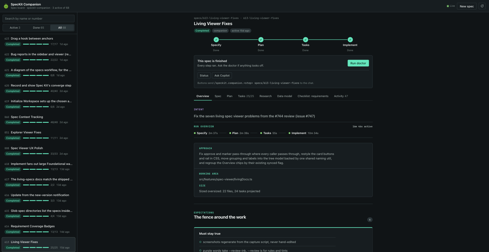

Planning work before code exists. Spec Kit and its extensions take a feature from an
idea through assessment, specification, planning, task breakdown, implementation, and
convergence, with a live companion canvas and per-step bookkeeping state.
Everything here writes under specs/ and .specify/. The code
they plan and build is the same WinUI 3, .NET 10, MVVM
View→ViewModel→Service→DAO stack that the rest of this book documents, so a
spec's implementation tasks still obey the house rules: MySQL 5.7 writes go through stored
procedures, Infor Visual SQL Server stays read-only, and tests are xUnit with
FluentAssertions.
speckit-companion
speckit-companion@0.2.1
Renders a live board of every spec in flight: the
specify→plan→tasks→implement pipeline, task progress, run history, and a
next-step button that advances the active feature.
Watching the active specs/ feature move through plan, tasks, and
implement without re-reading the .md files by hand.
Seeing at a glance which tasks in tasks.md are done, in progress, or
still pending while implementing a Module_Receiving change.
Resuming a half-finished feature by clicking the next-step button instead of
remembering which command comes next.
How to open
Ask for the companion board in chat; the canvas opens beside the conversation and
reads its state from the .spec-context.json that the companion agents
write.
Boundaries
It displays and steps through specs; it does not author them. The pipeline agents
below do the actual work.

The spec board as installed.
speckit.specify
.github/agents/speckit.specify.agent.md
Creates or updates a feature specification from a natural-language
description, writing spec.md into a numbered specs/NNN-slug/
directory and validating it against a quality checklist.
Starting a new feature by describing it in one sentence and getting a
spec.md with user scenarios, functional requirements, and success
criteria.
Fixing an existing spec in place when requirements drift, rather than rewriting the
feature from scratch.
Recording the feature directory in .specify/feature.json so
speckit.plan and speckit.tasks can find it without guessing.
Prerequisites
A feature description in the message. Everything else is created by the agent.
Boundaries
Writes the spec and checklist only. It never touches application code or the
MVVM layers.
/speckit.specify Add a two-tab analytics screen to Module_Reporting: one tab for
receipt counts by vendor, one for line discrepancies against Infor Visual. Keep it read-only.
speckit.plan
.github/agents/speckit.plan.agent.md
Executes the planning workflow from the spec, producing an
implementation plan with research and design artifacts.
Turning an approved spec.md into a plan.md that names the
ViewModel, Service, and DAO files a feature will touch.
Deciding up front whether a feature needs a new MySQL stored procedure or only a
read-only Infor Visual query, before any code is written.
Recording architecture and data-model choices so speckit.tasks can
break the plan into ordered, buildable tasks.
Prerequisites
A completed spec.md in the feature directory.
Boundaries
Designs; it does not write production code or break the plan into tasks.
/speckit.plan Plan the two-tab Module_Reporting analytics feature. Keep every MySQL
write behind a stored procedure and treat the Infor Visual connection as read-only, following
the DAO pattern in Module_Reporting/Data/.
speckit.tasks
.github/agents/speckit.tasks.agent.md
Generates an actionable, dependency-ordered tasks.md
for the feature from the spec and plan artifacts.
Producing a phase-by-phase task list that orders the DAO before the Service and the
Service before the ViewModel, matching the MVVM dependency direction.
Tagging tasks that touch MySQL stored procedures so they are implemented and tested
as a group.
Handing a complete task list to speckit.implement so it can execute
the feature in dependency order.
Prerequisites
A spec.md and a plan.md in the same feature
directory.
Boundaries
Breaks work down; it does not perform any of the tasks itself.
/speckit.tasks Generate tasks for the analytics feature. Order the DAO work before the
Service work, keep FluentAssertions tests on the plan, and name any test data with a TEST-
prefix.
speckit.implement
.github/agents/speckit.implement.agent.md
Executes the implementation plan by processing every task in
tasks.md in dependency order until the feature is built.
Building a feature end to end, task by task, so each ViewModel, Service, and DAO
lands in the right layer.
Running the narrowest build or test slice after each task instead of waiting for a
full solution run.
Stopping at the first failing task and reporting it, rather than silently
continuing past a broken build.
Prerequisites
A complete, ordered tasks.md produced by speckit.tasks.
Boundaries
Implements what the tasks say; it does not redesign the plan or add scope of its
own.
/speckit.implement Implement the tasks for specs/003-agent-toolkit-book/tasks.md. After each
task, run the narrowest dotnet build or dotnet test slice that can fail the change, and stop on
the first failure.
speckit.converge
.github/agents/speckit.converge.agent.md
Assesses the codebase against the spec, plan, and tasks, then
appends any remaining unbuilt work as a new Convergence phase in tasks.md.
Catching requirements in spec.md that speckit.implement
missed or only partially built, and re-queuing them as tasks.
Verifying that each task's promised files actually exist and satisfy the
acceptance criteria, rather than trusting a green checkmark.
Leaving tasks.md byte-for-byte unchanged when the code already meets
every requirement, so the feature can be declared done.
Prerequisites
spec.md, plan.md, and a tasks.md that
speckit.implement has already run.
Boundaries
Append-only: it writes new tasks but never edits existing ones, the spec, the plan,
or any application code.
/speckit.converge Converge the analytics feature. Treat the constitution in
.specify/memory/constitution.md as non-negotiable, and append any missing or partial work as a
new phase without rewriting existing tasks.
speckit.analyze
.github/agents/speckit.analyze.agent.md
Performs a non-destructive cross-artifact consistency and quality
analysis across spec.md, plan.md, and tasks.md
after task generation.
Finding a task in tasks.md that has no matching requirement in
spec.md, or a requirement with no task at all.
Confirming the plan's file references match the real MVVM layout, so a task cannot
point at a ViewModel that does not exist.
Running a read-only consistency pass before implementation so gaps are caught while
they are cheap to fix.
Prerequisites
All three artifacts present in one feature directory.
Boundaries
Read-only. It reports inconsistencies but changes no files.
/speckit.analyze Analyze specs/003-agent-toolkit-book/ for consistency between spec.md,
plan.md, and tasks.md. Report gaps and contradictions only; do not modify the files.
speckit.checklist
.github/agents/speckit.checklist.agent.md
Generates a custom checklist for the current feature that acts as
unit tests for the requirements writing, not for the finished software.
Checking that a spec's functional requirements are testable and unambiguous before
anyone starts planning.
Producing a domain-specific checklist for a Module_Dunnage feature so edge cases
like over-receipt are not forgotten in the spec.
Giving a reviewer a yes/no list to run against the spec, separate from code tests.
Prerequisites
A feature spec or a domain to check against.
Boundaries
Validates requirements quality; it does not verify application behavior or write
code tests.
/speckit.checklist Create a requirements checklist for the receiving workflow. Cover
quantity mismatch, label reprint, and the boundary where MySQL writes go through stored
procedures and Infor Visual stays read-only.
speckit.clarify
.github/agents/speckit.clarify.agent.md
Identifies underspecified areas in the current spec by asking up
to five targeted questions and encoding the answers back into spec.md.
Resolving an ambiguous requirement such as what happens when a received quantity
exceeds the PO line before planning begins.
Asking which MySQL table owns a piece of state, so the spec says it explicitly
instead of leaving the choice to implementation.
Turning [NEEDS CLARIFICATION] markers into concrete, testable requirements.
Prerequisites
An existing spec with underspecified areas.
Boundaries
Asks up to five questions and edits the spec; it does not plan or implement.
/speckit.clarify Clarify the receiving workflow spec. Focus on over-receipt handling,
which DAO owns the line insert, and how discrepancies are surfaced to the user.
speckit.constitution
.github/agents/speckit.constitution.agent.md
Creates or updates the project constitution from interactive or
provided principle inputs, storing the rules every later pipeline step must obey.
Encoding the repo's non-negotiables, such as no raw MySQL SQL in C#, into
.specify/memory/constitution.md so converge can enforce them.
Recording the View→ViewModel→Service→DAO layering as a MUST
principle that every spec's tasks inherit.
Updating the constitution when a rule changes, rather than pasting the rule into
each agent file.
Prerequisites
None; it can bootstrap the constitution from prompts or an existing file.
Boundaries
Writes governance, not feature code.
/speckit.constitution Update the constitution to add: Infor Visual is read-only, MySQL
writes must use stored procedures, and ViewModels never call DAOs directly.
speckit.taskstoissues
.github/agents/speckit.taskstoissues.agent.md
Converts the tasks in tasks.md into actionable,
dependency-ordered GitHub issues for the feature.
Turning a planned feature into a set of GitHub issues so a team member can pick up
one task at a time.
Preserving task dependency order in the issue list, so the DAO issue is filed
before the Service issue.
Linking each issue back to the spec and plan so reviewers can trace work to its
requirement.
Prerequisites
A completed tasks.md and a GitHub remote for the repository.
Boundaries
Files issues; it does not implement anything or modify local code.
/speckit.taskstoissues Create GitHub issues from specs/003-agent-toolkit-book/tasks.md,
keeping dependency order and linking each issue back to its spec requirement.
speckit.module-specify
.github/agents/speckit.module-specify.agent.md
Generates a feature specification for modernizing or creating a
module based on module-agent workflow analysis.
Writing a spec to rebuild an existing module, such as Module_Volvo, onto the
current CQRS and MVVM patterns.
Producing a spec for a brand-new module so its ViewModels, Services, and DAOs are
planned before any code exists.
Capturing the module's database contract, MySQL stored procedures and read-only
Infor Visual queries, as requirements in one place.
Prerequisites
A module to modernize or a description of the module to create.
Boundaries
Specifies the module; it does not implement or restructure it.
/speckit.module-specify Spec a modernization of Module_Volvo. Keep the MVVM flow View to
ViewModel to Service to DAO, list every MySQL stored procedure it needs, and mark the Infor
Visual access read-only.
speckit.assess.intake
.github/agents/speckit.assess.intake.agent.md
Captures and normalizes a raw idea, text, URL, ticket, or
codebase pointer into a single intake note at
.specify/assessments/<slug>/intake.md.
Writing down a rough idea such as a dunnage label redesign before any judgment is
applied.
Normalizing a pasted bug ticket into the assessment folder so later stages have a
stable file to build on.
Recording where an idea came from, the problem it claims to solve, without yet
proposing a solution.
Prerequisites
Only the idea itself, however rough.
Boundaries
Front door of the assessment pipeline; it records, it does not judge.
/speckit.assess.intake Operators want a dunnage label that prints directly from the
receiving screen. Intake this idea with its source and do not evaluate it yet.
speckit.assess.research
.github/agents/speckit.assess.research.agent.md
Gathers evidence, users, market, prior art, and data to support
or challenge an idea, recording it at
.specify/assessments/<slug>/research.md.
Checking whether other modules already print labels so a new feature is not
duplicating existing work.
Collecting how many receiving lines per day a proposed change would affect, from
the MySQL tables that record them.
Surfacing prior art that kills a bad idea early, before it reaches planning.
Prerequisites
An intake note for the idea.
Boundaries
Gathers evidence only; it does not define the problem or shape a solution.
/speckit.assess.research Research the dunnage label idea from intake. Check existing
Module_Receiving label code, prior art in the repo, and the volume of dunnage lines in MySQL.
Record findings, do not recommend yet.
speckit.assess.define
.github/agents/speckit.assess.define.agent.md
Turns intake and research into a crisp problem definition at
.specify/assessments/<slug>/problem.md: who is affected, what hurts,
goals, non-goals, and success metrics.
Stating the dunnage label problem as who is slowed down and what a good outcome
looks like, before any solution talk.
Listing non-goals so a later spec does not quietly absorb unrelated work.
Defining measurable success, such as time per label, that later stages can test
against.
Prerequisites
Intake and research notes for the idea.
Boundaries
Defines the problem only; it explicitly avoids proposing a solution.
/speckit.assess.define Define the problem for the dunnage label idea: who is affected,
what hurts today, and what measurable success looks like. Do not propose a solution.
speckit.assess.shape
.github/agents/speckit.assess.shape.agent.md
Shapes a concept from the defined problem at
.specify/assessments/<slug>/concept.md: solution options, scope,
appetite, and trade-offs, without implementation design.
Comparing two or three ways to solve the dunnage label problem, with the cost and
appetite of each.
Bounding the scope so a later spec does not balloon into a full label designer.
Documenting trade-offs, such as print-from-screen versus a separate label module,
for the decide step.
Prerequisites
A defined problem.
Boundaries
Stays at concept level; architecture, data models, and tasks belong to specify and
beyond.
/speckit.assess.shape Shape two options for the dunnage label problem with scope, appetite,
and trade-offs. No implementation design; leave that to speckit.specify.
speckit.assess.decide
.github/agents/speckit.assess.decide.agent.md
Applies a go, needs-clarification, or kill gate to an assessed
idea and hands survivors into spec-driven development.
Recording a kill decision with its reason, so a bad idea stops before it consumes
spec and plan effort.
Sending a go idea to speckit.specify with the assessment context it
needs.
Sending an under-researched idea back to research or define instead of guessing.
Prerequisites
Intake, research, a problem definition, and a shaped concept.
Boundaries
Renders a verdict; it does not start the spec itself.
/speckit.assess.decide Decide on the dunnage label idea. It is a success either way:
record a go, needs-clarification, or kill with a reason, and hand a go off to speckit.specify.
speckit.bug.assess
.github/agents/speckit.bug.assess.agent.md
Assesses a bug report, pasted text or URL, against the codebase
and produces an assessment with possible remediation at
.specify/bugs/<slug>/assessment.md.
Triaging a reported receiving-line discrepancy by locating the suspected root cause
in a ViewModel, Service, or DAO.
Judging severity so a data-loss bug in a MySQL write path is ranked above a label
formatting nit.
Producing the assessment file that speckit.bug.fix and
speckit.bug.test consume.
Prerequisites
A bug report and access to the codebase.
Boundaries
Assesses and proposes; it does not fix the bug.
/speckit.bug.assess Assess this bug: saving a receiving line in Module_Receiving fails
when the PO has no open line. Locate the root cause, judge severity, and propose a
remediation, but change nothing.
speckit.bug.fix
.github/agents/speckit.bug.fix.agent.md
Applies the remediation from a bug assessment and records what
changed in a fix report at .specify/bugs/<slug>/fix.md.
Applying the assessed fix to the DAO or stored-procedure call path, keeping the
change inside the MVVM layer that owns it.
Recording exactly which files changed so speckit.bug.test knows what
to verify.
Keeping bug fixes traceable to their assessment instead of losing the rationale in
chat.
Prerequisites
An existing assessment for the same slug.
Boundaries
Fixes only what the assessment proposed; it does not verify the fix.
/speckit.bug.fix Apply the remediation from the open-line bug assessment. Make the smallest
change in the owning Service or DAO, record the changed files, and do not verify the fix.
speckit.bug.test
.github/agents/speckit.bug.test.agent.md
Validates that a previously fixed bug is resolved and records a
verification report at .specify/bugs/<slug>/test.md.
Re-running the failing scenario against the fixed code to prove the bug is gone
before closing it.
Adding a focused xUnit regression test with FluentAssertions that fails on the old
code and passes on the fix.
Recording the verification evidence, build result and test result, in the bug
folder.
Prerequisites
A fix report from speckit.bug.fix.
Boundaries
Verifies; it does not re-fix or change production code.
/speckit.bug.test Verify the open-line bug fix. Re-run the failing scenario, add a
regression test with a TEST- prefix and FluentAssertions, and record the build and test
results.
Marks the active spec completed by hand, writing
status: completed into its state.
Closing out a spec whose work is done but that the pipeline did not auto-close.
Correcting a spec left in a running state after a session was interrupted.
Boundaries
Not invoked by hand as a pipeline step; it is a manual state correction that writes
only the completed status.
speckit.companion.auto
.github/agents/speckit.companion.auto.agent.md
Runs the whole pipeline hands-off, specify, plan, tasks,
implement, converge, with no pauses for approval.
Taking a one-line feature idea all the way to converged code in a single
uninterrupted run.
Regenerating a small module change end to end when every step is already
well-understood.
Producing the complete artifact chain under specs/ for a feature
without babysitting each stage.
Prerequisites
A feature description and confidence that the constitution covers the work.
Boundaries
Runs everything without asking; do not use it where a major assumption needs a
human decision first.
/speckit.companion.auto Auto-run the full pipeline for a small Module_Settings feature:
add a save-and-apply button. It must respect the constitution, keep MySQL writes in stored
procedures, and stop only on build or test failure.
speckit.companion.specify
.github/agents/speckit.companion.specify.agent.md
Companion specify: creates a feature spec with prioritized user
stories, writing state to .spec-context.json as it goes.
Producing a spec for a new receiving feature with user stories ordered by
priority.
Starting the companion-tracked pipeline so the board follows every later step.
Recording the new feature directory in state so plan and tasks can find it.
Prerequisites
A feature description.
Boundaries
Specifies and records state; it does not plan or implement.
/speckit.companion.specify Spec a receiving-history search: operators can search past
receipts by PO, part, and date. Prioritize the user stories, keep it read-only, and record the
spec in the companion state.
speckit.companion.plan
.github/agents/speckit.companion.plan.agent.md
Companion plan: produces an implementation plan with research
and design artifacts, tracking the step in companion state.
Planning which ViewModel, Service, and DAO files a feature will add or change.
Recording the MySQL stored procedures and read-only Infor Visual queries a feature
depends on.
Advancing the companion board from spec to plan.
Prerequisites
A spec created through the companion pipeline.
Boundaries
Designs; it does not break the plan into tasks.
/speckit.companion.plan Plan the receiving-history search. Name the concrete files under
Module_Receiving, the MySQL stored procedure for the history query, and the Infor Visual joins
that stay read-only.
speckit.companion.tasks
.github/agents/speckit.companion.tasks.agent.md
Companion tasks: generates a user-story phased task list from the
plan, tracking the step in companion state.
Breaking a plan into phases ordered so the DAO is built before the Service before
the ViewModel.
Grouping tasks by user story so a story can be implemented and verified as a unit.
Advancing the companion board from plan to tasks.
Prerequisites
A plan from the companion pipeline.
Boundaries
Breaks work down; it does not implement anything.
/speckit.companion.tasks Generate the task list for the receiving-history search, phased by
user story and dependency order. Include xUnit tests with FluentAssertions and TEST- prefixed
data.
Companion implement: executes tasks.md in
dependency order, then runs converge, tracking both in companion state.
Building every task in order and then converging so nothing planned is left
unbuilt.
Running narrow build and test slices after each task, stopping on the first
failure.
Advancing the board through implement and into converge.
Prerequisites
A complete tasks.md from the companion pipeline.
Boundaries
Implements the tasks as written; it does not add scope.
/speckit.companion.implement Implement the receiving-history search tasks in dependency
order, then converge. Run the narrowest dotnet build or test slice per task and stop on the
first failure.
speckit.companion.resume
.github/agents/speckit.companion.resume.agent.md
Continues the spec-driven pipeline from the last completed step,
carrying recorded decisions into scope and dispatching the next command.
Picking up a half-finished feature the next day without re-reading every artifact
by hand.
Carrying the decisions already recorded in .spec-context.json into the
resumed run.
Dispatching the correct next step, plan, tasks, implement, or converge, based on
where the feature stopped.
Prerequisites
A feature with recorded companion state from a prior run.
Boundaries
Resumes; it does not restart completed steps or redo finished work.
/speckit.companion.resume Resume the receiving-history search feature. Read its
.spec-context.json, carry the recorded decisions, and dispatch the next step after the last
completed one.
speckit.companion.status
.github/agents/speckit.companion.status.agent.md
Reports where the active spec stands, current step, status,
recorded decisions, and the next action, read from .spec-context.json.
Answering where a feature is in the pipeline without opening the board.
Listing the decisions recorded so far, so a handoff to another developer is quick.
Naming the next action so the right command is run next.
Prerequisites
A feature with companion state.
Boundaries
Read-only; it reports state and changes nothing.
/speckit.companion.status Show the status of the active spec: current step, recorded
decisions, and the exact next action to run.
Classifies the change size as simple, normal, or oversized so
the companion workflow can right-size the pipeline.
Deciding whether a one-file DAO tweak is simple enough to skip heavy ceremony.
Flagging a change that touches many modules as oversized so it is split before
planning.
Right-sizing the pipeline so a small fix is not run through the full spec chain.
Prerequisites
A description of the change or its spec.
Boundaries
Classifies only; it does not run any pipeline step.
/speckit.companion.classify Classify the change: rename one method in
Dao_ReceivingLine. Is it simple, normal, or oversized, and what pipeline does it need?
speckit.companion.doctor
.github/agents/speckit.companion.doctor.agent.md
Reports on a spec's run health: unfinished steps, unjournaled
tasks, step bleed, drift, a step that closed without verifying or without its promised
file, and why completion did not land.
Diagnosing a feature stuck between steps, such as a tasks file that exists but was
never marked complete.
Finding a step that closed without the spec file it promised, so the gap can be
fixed before resuming.
Checking why completion did not land after a pipeline run that looked finished.
Prerequisites
A feature with companion state.
Boundaries
Read-only and retroactive; it reports health and never halts a run.
/speckit.companion.doctor Diagnose the receiving-history search spec: unfinished steps,
unjournaled tasks, drift, and why completion has not landed. Report only, change nothing.
speckit.companion.append
.github/agents/speckit.companion.append.agent.md
Appends a new capability to the active spec without regenerating
its task list, preserving every completed task id and result.
Adding a second screen to a feature already in flight without losing the tasks that
are done.
Extending a spec's requirements and appending matching tasks, so the new work has
ids that do not collide with existing ones.
Keeping completed work intact while scope grows, instead of regenerating the whole
plan.
Prerequisites
An active spec with a task list that may already be partly done.
Boundaries
Appends; it does not rewrite or renumber existing tasks.
/speckit.companion.append Add an export-to-CSV capability to the receiving-history search
spec. Append the new requirements and tasks without changing any completed task id.
Syncs living specs from your current changes: groups
working-tree changes, uncommitted included, by capability and updates every affected
spec in one pass.
Updating the Module_Receiving living spec after editing its DAO and Service so the
spec matches the working tree.
Folding uncommitted changes into the spec in one pass before a commit.
Boundaries
Not invoked as a verb; it updates specs in place and never regenerates them.
Checks the shape of living specs and a feature spec's deltas: a
requirement with no scenario, a scenario missing WHEN or THEN, a duplicate heading, or a
delta pointing at nothing.
Validating that every living-spec requirement has a scenario with WHEN and THEN
before relying on the spec.
Catching a duplicate heading or a delta that references a deleted file.
Boundaries
Not invoked as a verb; it validates shape, read-only, never halts or writes.
Choosing between them. Run the pipeline agents in
order, specify, plan, tasks, implement,
converge, and reach for the companion verbs when you want the board to track
the same steps. Use the assessment and bug extensions before the pipeline, for ideas and
defects that are not yet ready to become specs. The companion bookkeeping and living-spec
agents are not run by hand; they keep state and living specs in sync around the verbs.
C# and .NET development
Building and fixing the application itself: routing to the narrowest C# specialist,
behavior-preserving refactors, MSBuild diagnosis, local SDKs, async and best-practice
guidance, and the test-framework skills. The stack is WinUI 3 on
net10.0-windows10.0.22621.0 with the Windows App SDK, MediatR 14,
FluentValidation 12, Serilog, OpenTelemetry, Mapster, and CommunityToolkit.Mvvm, plus
Roslynator analyzers and CSharpier formatting.
The MVVM flow here is always View → ViewModel → Service → DAO. For the
database end of that chain — MySQL 5.7 stored procedures and the read-only Infor Visual
SQL Server — see the database chapter.
csharp-expert
dotnet@0.2.5
Routes a C#/.NET request to the narrowest installed specialist
skill, or answers C# semantics directly when no narrower specialist exists.
Picking the right specialist when a request mixes WinUI 3, a test framework, and a
DAO change across Module_Receiving/ and Module_Core/.
Answering a C# 13 language question — records, required members, collection
expressions — without launching a full refactor.
Deciding whether csharp-refactoring or msbuild should own
the next step of a multi-part change.
Prerequisites
An installed specialist to route to; otherwise it answers the question itself.
Boundaries
Routes and answers questions. It does not perform the refactor or build fix it hands
off.
Route this request to the narrowest installed C# specialist: refactor
ViewModel_Receiving_Workflow in Module_Receiving to replace a Clear() plus Add() loop
with a new ObservableCollection instance. If no specialist fits, answer the C#
question directly.
csharp-refactoring
dotnet@0.2.5
Performs behavior-preserving refactors — renames, method
extraction, inlining, and nullability changes — while keeping any behavior-changing part
separate.
Renaming a DAO method across Module_Receiving/ and its tests without
breaking the Model_Dao_Result callers.
Splitting a nullable-annotation sweep from the behavior fix it was accidentally
bundled with.
Extracting duplicated load-and-logic code in a Service into a private helper with no
change to output.
Prerequisites
A compiling baseline — dotnet build MTM_Receiving_Application.slnx — so
the refactor can be verified green.
Boundaries
Refactors only. It declines the behavior-changing part of a mixed request rather than
folding it in.
Use the csharp-refactoring skill to rename Dao_ReceivingLine.GetByLoadAsync
to GetLinesByLoadAsync everywhere, including MTM_Receiving_Application.Tests. Keep
behavior identical and report any call site you cannot safely update.
msbuild
dotnet@0.2.5
Diagnoses MSBuild and .csproj issues — failing
restore or build, slow evaluation, custom targets, and .binlog replay.
Explaining why MTM_Receiving_Application.csproj fails to restore after
a PackageReference change.
Replaying a .binlog to find why the x64-only Platforms
property slowed a no-change build.
Auditing the BuildSyncToolExe custom target that runs before
BeforeBuild.
Prerequisites
The failing .binlog or the .csproj/.props/
.targets files in question.
Boundaries
Investigates and explains build files. It does not refactor C# or decide project-system
migrations on its own.
Use the msbuild skill to investigate a failing dotnet build of
MTM_Receiving_Application.slnx. Capture a .binlog, replay it, and explain which
target or PackageReference caused the restore failure before any edit.
setup-local-sdk
dotnet@0.2.5
Installs a .NET SDK locally for preview or pinned-version testing
without changing the machine-wide installation.
Trying a .NET preview against the net10.0-windows10.0.22621.0 target
before the team adopts it.
Pinning a specific SDK version for reproducible builds of
MTM_Receiving_Application.slnx.
Testing a global.json pin without touching the Visual Studio-installed
SDK.
Prerequisites
None beyond the local install directory. The project stays on its existing SDK until a
global.json opts in.
Boundaries
Installs and configures a local SDK. It does not migrate the project to a new target
framework.
Use the setup-local-sdk skill to install .NET SDK 10.0.100 locally, add a
global.json pinning that version, and run dotnet build
MTM_Receiving_Application.slnx with it. Leave the machine-wide SDK untouched.
csharp-async
csharp-dotnet-development@1.2.0
Gives async/await best practices for .NET code, including
fire-and-forget risks, ConfigureAwait, and cancellation.
Reviewing an async ViewModel command that swallows exceptions from a Service call in
Module_Receiving/.
Ensuring every Async-suffixed method in Module_Core/
actually awaits and passes CancellationToken.
Avoiding deadlocks when a ViewModel awaits a DAO call on the UI thread in WinUI 3.
Prerequisites
Existing async C# to review; this repo's Async suffix naming applies.
Boundaries
Advises on async patterns. It does not rewrite synchronous code unless asked.
Use the csharp-async skill to review SaveLineAsync in
ViewModel_Receiving_POEntry. Confirm it awaits the mediator call, propagates
CancellationToken, and handles faults without fire-and-forget, then list the minimal
fixes.
dotnet-best-practices
csharp-dotnet-development@1.2.0
Checks that .NET/C# code meets best practices for the solution or
project.
Auditing a new DAO in Module_Receiving/ for disposal, naming, and
Model_Dao_Result usage.
Reviewing a Service for dependency-injection, nullability, and async best practices.
Confirming DI registration lives in Infrastructure/DependencyInjection/
rather than App.xaml.cs.
Prerequisites
A scoped set of files or one project to review.
Boundaries
Reports guidance. It does not apply the fixes or rewrite architecture.
Use the dotnet-best-practices skill on Module_Dunnage. Check that services
hold business logic, DAOs return Model_Dao_Result, DI registrations live under
Infrastructure/DependencyInjection, and async methods end with Async. Report
violations with file paths.
dotnet-upgrade
csharp-dotnet-development@1.2.0
Provides a structured workflow for upgrading the .NET framework
version across a solution.
Planning a future move off net10.0-windows10.0.22621.0 when the next LTS
ships.
Sequencing a package and target-framework bump across the main project and
MTM_Receiving_Application.Tests.
Deciding whether the Windows App SDK and MySql.Data versions block a
target-framework upgrade.
Prerequisites
A committed baseline so each project upgrade can be rolled back independently.
Boundaries
Provides the upgrade workflow. It will not change DB schema, stored procedures, or DI
wiring without approval.
Use the dotnet-upgrade skill to plan an upgrade of
MTM_Receiving_Application.csproj and MTM_Receiving_Application.Tests. Report the
upgrade order, Windows App SDK and MySql.Data compatibility checks, and the CI/CD
files that must follow.
resx-source-generator-migration
csharp-dotnet-development@1.2.0
Migrates .resx resources to source generators so string
lookups become strongly typed.
Replacing runtime .resx lookups in Module_Settings/ with
generated accessors.
Eliminating magic string keys for label text used across
Module_Receiving/ views.
Verifying existing resources map one-to-one before the switch.
Prerequisites
The .resx files to migrate and their consuming call sites.
Boundaries
Migrates resources. It does not retranslate strings or alter user-facing copy.
Use the resx-source-generator-migration skill to migrate the .resx files
under Module_Settings to source-generated accessors. Keep every string key and
value identical and update call sites to the generated members.
aspnet-minimal-api-openapi
csharp-dotnet-development@1.2.0
Creates ASP.NET Core minimal API endpoints with correct OpenAPI
metadata.
Prototyping a small read-only HTTP endpoint to expose receiving status outside the
desktop app.
Adding OpenAPI annotations to a scratch API for a future companion service.
Generating a .http test file for a new endpoint.
Prerequisites
An ASP.NET Core host, which this repository does not have.
Boundaries
This repo is a WinUI 3 desktop app, not ASP.NET. The skill is useful only for side
experiments, never for the shipping app.
Use the aspnet-minimal-api-openapi skill to scaffold a throwaway minimal API
project in a scratch folder that exposes receiving-line counts. Do not modify the
WinUI 3 solution; this is a standalone experiment.
csharp-mstest
csharp-dotnet-development@1.2.0
Gives MSTest 3.x/4.x patterns and modern assertion APIs.
Writing or reviewing MSTest tests with modern Assert.That-style
assertions when MSTest is chosen.
Deciding MSTest lifecycle and data-driven attributes for a new test class.
Converting legacy Assert.AreEqual style to modern assertions.
Prerequisites
A test project that already targets MSTest.
Boundaries
MSTest-specific only. This repo's own tests use xUnit, so it applies to new or external
MSTest work.
Use the csharp-mstest skill to show the MSTest 3.x assertion and data-driven
test patterns, applied to a sample test class named Dao_ReceivingLineTests. Do not
change the existing xUnit test project.
Writing NUnit TestCase/TestCaseSource tests when NUnit is the
chosen framework.
Migrating an existing test suite into NUnit conventions.
Comparing NUnit lifecycle against xUnit before choosing a framework for new tests.
Prerequisites
A test project that targets NUnit.
Boundaries
One skill bundled by two plugins —
csharp-dotnet-development@1.2.0 and testing-automation@1.0.0 —
so it is counted once, not twice.
Use the csharp-nunit skill to show NUnit data-driven test patterns with
TestCase, applied to a sample DAO validation test. This repo's own suite is xUnit,
so leave MTM_Receiving_Application.Tests unchanged.
csharp-tunit
csharp-dotnet-development@1.2.0
Gives TUnit patterns and data-driven tests.
Writing TUnit tests with source-generated attributes when TUnit is chosen.
Comparing TUnit's attribute model to xUnit for a potential new test project.
Prototyping a TUnit test class to evaluate the framework.
Prerequisites
A test project that targets TUnit.
Boundaries
TUnit-specific only. This repo's tests are xUnit + FluentAssertions, so it applies to
new or external TUnit work.
Use the csharp-tunit skill to show a TUnit data-driven test class for a
hypothetical DAO. Do not alter MTM_Receiving_Application.Tests, which stays on
xUnit.
csharp-xunit
csharp-dotnet-development@1.2.0
Gives xUnit patterns and data-driven tests.
Writing xUnit Theory/InlineData tests for validators, matching
the existing MTM_Receiving_Application.Tests conventions.
Applying IAsyncLifetime to an integration test that touches MySQL stored
procedures.
Keeping assertions in FluentAssertions style for DAO tests that return
Model_Dao_Result.
Prerequisites
A test project targeting xUnit, such as MTM_Receiving_Application.Tests.
Boundaries
xUnit patterns only. It assumes the repo's FluentAssertions and TEST-
data-prefix rules are followed.
Use the csharp-xunit skill to add an IAsyncLifetime integration test for
Dao_ReceivingLine in MTM_Receiving_Application.Tests. Use FluentAssertions, prefix
test data with TEST-, and name it MethodName_ShouldResult_WhenCondition.
expert-dotnet-software-engineer
csharp-dotnet-development@1.2.0
Provides expert .NET software engineering guidance using modern
design patterns.
Reviewing a proposed cross-module change for correct MVVM layering before code is
written.
Recommending a design pattern for a new receiving workflow service.
Explaining the trade-offs of MediatR 14 handlers versus direct service calls in this
app.
Prerequisites
A concrete design question or a diff to review.
Boundaries
Advises on design. It does not make edits unless you explicitly ask it to implement.
Use the expert-dotnet-software-engineer agent to review how Module_Receiving
should add a new workflow step. Keep the View to ViewModel to Service to DAO
layering, MySQL writes behind stored procedures, and explain where the new handler
and validator belong.
Choosing between them. Start with
csharp-expert to route, msbuild when the build breaks, and
csharp-xunit for this repo's tests. The aspnet-minimal-api-openapi
skill is for scratch experiments only — this is a WinUI 3 app, not ASP.NET.
Testing
Writing and running the test suite. Everything here operates on
MTM_Receiving_Application.Tests/, which is xUnit with FluentAssertions,
method names of the form MethodName_ShouldResult_WhenCondition, integration
tests built on IAsyncLifetime, and test data prefixed
TEST-.
Unit tests cover FluentValidation validators and view models that depend only on
IMediator; integration tests cover view models with concrete services,
handlers with concrete DAOs, and the DAOs themselves. Run the suite with
dotnet test MTM_Receiving_Application.Tests/MTM_Receiving_Application.Tests.csproj;
the solution file is MTM_Receiving_Application.slnx.
writing-mstest-tests
dotnet-test@1.0.0
Corrects MSTest assertion, attribute, and lifecycle usage in
supplied test code rather than authoring new cases.
Fixing an [TestMethod], [DataTestMethod], or
Assert API mistake in a file that must stay MSTest.
Converting a legacy MSTest fixture so its setup and cleanup run in the right
order.
Correcting MSTest configuration in a project that intentionally does not use
xUnit.
Prerequisites
Existing MSTest code to correct. It edits supplied MSTest, not xUnit.
Boundaries
This repo is xUnit with FluentAssertions, so for new cases reach for
code-testing; use this skill only when a genuine MSTest target appears.
Use the writing-mstest-tests skill on the supplied MSTest file. Fix the
attribute, assertion, and lifecycle mistakes so the tests compile and run, but do not
convert the file to xUnit.
run-tests
dotnet-test@1.0.0
Runs, filters, or troubleshoots dotnet test for
this repo, detecting the test platform and framework first.
Running the full suite with
dotnet test MTM_Receiving_Application.Tests/MTM_Receiving_Application.Tests.csproj
using the correct flags.
Running one xUnit test class or category without guessing the filter flag.
Diagnosing why a dotnet test invocation fails or ignores the
requested filter.
Prerequisites
A test project already wired into the solution. It runs tests; it does not
author them.
Boundaries
Does not write or debug test code, and does not interpret an existing coverage
report.
Use the run-tests skill to run the Module_Receiving unit tests only, in
MTM_Receiving_Application.Tests/Unit/Module_Receiving. Detect the platform first, then
give me the exact dotnet test command and run it.
filter-syntax
dotnet-test@1.0.0
Selects the correct filter flag and syntax for the detected
test platform, from --filter to
--filter-class, --filter-trait, and
--treenode-filter.
Building a filter that runs one xUnit class by name without trial and error.
Combining a class filter with a trait filter in a single
dotnet test command.
Resolving a filter error by picking the flag that matches the runner.
Prerequisites
The test project and the filter intent. It returns syntax, not test
results.
Boundaries
Only answers the flag question; running the filtered command belongs to
run-tests.
Use the filter-syntax skill for MTM_Receiving_Application.Tests. Give the
exact filter flag and syntax to run all Dao_ReceivingLine integration tests in
MTM_Receiving_Application.Tests/Integration/Database, and note which flag matches
this xUnit platform.
platform-detection
dotnet-test@1.0.0
Identifies a .NET project's test platform, framework, command
mode, and SDK-style versus classic project system.
Confirming whether
MTM_Receiving_Application.Tests runs under VSTest or the Microsoft
Testing Platform.
Checking whether the xUnit project uses classic or SDK-style layout before a
test change.
Resolving conflicting VSTest and MTP settings in the csproj.
Prerequisites
The test project file. It identifies; it does not run anything.
Boundaries
Answers platform questions only; for commands and flags use
run-tests.
Use the platform-detection skill on
MTM_Receiving_Application.Tests/MTM_Receiving_Application.Tests.csproj. Report the
test platform, framework, command mode, and whether the project is SDK-style or
classic.
mtp-hot-reload
dotnet-test@1.0.0
Sets up or recovers a long-lived Microsoft Testing Platform
console host for an edit-and-rerun loop.
Starting a watch loop that reruns tests on each edit during a long refactor.
Recovering an MTP console session that lost its hot-reload state.
Choosing the VSTest fallback when MTP hot reload cannot mutate this project.
Prerequisites
An MTP console host; for one-time runs use run-tests instead.
Boundaries
Does not write or debug tests, and excludes editor integration and CI
configuration.
Use the mtp-hot-reload skill to start a hot-reload console loop for
MTM_Receiving_Application.Tests, filtered to Module_Dunnage, so the xUnit tests
rerun on each edit.
scaffold-dotnet-test-project
dotnet-test@1.0.0
Creates, registers, or repairs an xUnit test project so it is
discovered by the solution and CI.
Re-wiring
MTM_Receiving_Application.Tests into
MTM_Receiving_Application.slnx after a solution-filter change.
Restoring a missing ProjectReference from the test project to the
module under test.
Diagnosing why tests pass locally but CI discovers zero.
Prerequisites
A solution and the project files involved. It fixes wiring, not test
bodies.
Boundaries
Does not author tests in an already-wired project; use
code-testing for that.
Use the scaffold-dotnet-test-project skill to verify that
MTM_Receiving_Application.Tests is included in MTM_Receiving_Application.slnx and
holds a ProjectReference to each module it tests. Repair any missing wiring.
coverage-analysis
dotnet-test@1.0.0
Interprets supplied .NET coverage reports, including Cobertura
data, partial conditions, plateaus, and coverage-backed refactoring risk.
Reading a Cobertura report to find which DAO methods have no line coverage.
Explaining why coverage has plateaued across the receiving module.
Assessing whether a covered class is safe to refactor before touching it.
Prerequisites
An existing coverage report or an explicit request to collect coverage. It
analyzes supplied evidence.
Boundaries
Does not collect coverage on its own; for a named method's risk use
crap-score.
Use the coverage-analysis skill on the Cobertura output for
MTM_Receiving_Application.Tests. Report which Module_Receiving classes have zero
line coverage, which branches are only partially covered, and where coverage has
plateaued.
crap-score
dotnet-test@1.0.0
Calculates CRAP risk for a named .NET method, class, or file
using coverage and complexity together.
Scoring one Dao_ReceivingLine method to decide which test to write
first.
Ranking the riskiest service methods in Module_Receiving for a targeted test
pass.
Justifying a refactor by showing the CRAP score drops after adding tests.
Prerequisites
A named method, class, or file to score. It needs a coverage figure to be
meaningful.
Boundaries
Scores a single named target; project-wide coverage and CRAP belong to
coverage-analysis.
Use the crap-score skill on the Service_ReceivingLine class in
Module_Receiving/Services. Rank each public method by CRAP risk and tell me which
method needs a test first.
code-testing-agent
dotnet-test@1.0.0
Dispatches test authoring, repair, and strengthening work to the
right specialist for this repo's xUnit and FluentAssertions conventions.
Routing a broad test-generation request to the specialist workers without doing
the work inline.
Coordinating researcher, planner, and implementer for a new module's test
coverage.
Ensuring every generated test follows
MethodName_ShouldResult_WhenCondition and
TEST- data rules.
Prerequisites
A test objective and the xUnit project. It orchestrates rather than writes
directly.
Boundaries
For one focused test change, use code-testing instead of the full
pipeline.
Use the code-testing-agent skill to add unit tests for the
Module_Receiving validators in MTM_Receiving_Application.Tests/Unit/Module_Receiving.
Coordinate research, planning, and implementation, and finish with a green
dotnet test run on the test project.
code-testing-extensions
dotnet-test@1.0.0
Applies code-testing conventions to extension points such as
analyzers, source generators, or custom xUnit fixtures.
Testing a source generator or analyzer that ships with a module.
Adding a shared xUnit fixture that multiple test classes can reuse.
Wiring a custom attribute or trait convention into the test project.
Prerequisites
An extension surface in or near the test project to cover.
Boundaries
Targets extension seams only; ordinary class tests belong to
code-testing.
Use the code-testing-extensions skill to add tests for the custom xUnit
fixture in MTM_Receiving_Application.Tests. Verify the fixture's IAsyncLifetime
cleanup and the TEST- data prefix with FluentAssertions.
test-analysis-extensions
dotnet-test@1.0.0
Extends the analysis skills to custom rules and project-specific
conventions in the test suite.
Adding a project-specific audit rule, such as every integration test using
IAsyncLifetime.
Checking that every test class lives under Unit/ or
Integration/ as the repo requires.
Encoding the TEST- data prefix as a lintable convention.
Prerequisites
A convention to enforce and the test files it applies to. It reports, not
fixes.
Boundaries
Extends analysis only; the standard audits stay with the analysis skills in the
code quality chapter.
Use the test-analysis-extensions skill to audit
MTM_Receiving_Application.Tests for these repo rules: every integration test uses
IAsyncLifetime, every test class sits in Unit/ or Integration/, and all fixture data
carries the TEST- prefix. Report violations with file and line.
Documented in code quality
These analysis skills are covered in the
code quality chapter because they audit tests rather than
produce them: assertion-quality, grade-tests, test-anti-patterns,
test-smell-detection, test-tagging, and code-testing.
The test-quality-auditor agent is also covered there, alongside the
test-engineer entry it supports.
test-engineer
dotnet-test@1.0.0
The primary test engineering agent that generates, repairs, runs,
and audits tests end-to-end, coordinating the specialist workers.
Running the full build-test-fix cycle for a module's xUnit tests without
hand-holding each step.
Coordinating researcher, planner, and implementer for a broad audit-and-fix pass
over the test project.
Driving a refactor of tests after a production DAO signature changes.
Prerequisites
A concrete testing objective and the xUnit project wired into the solution.
Boundaries
Orchestrates end-to-end; for one focused fix prefer code-testing
directly.
Use the test-engineer agent to strengthen tests for Module_Receiving. Run
dotnet test MTM_Receiving_Application.Tests/MTM_Receiving_Application.Tests.csproj
first to get the baseline, then add and repair tests, and finish with a green run.
java-junit
testing-automation@1.0.0
Writes, reviews, and fixes Java unit tests with JUnit 5 and 6,
including AssertJ, Mockito, parameterized tests, and Maven or Gradle.
Adding JUnit 5 tests to a Java helper that appears inside the repo's tooling.
Reviewing an existing Maven or Gradle test module for mocking and assertion
rules.
Fixing a parameterized JUnit test that fails under Surefire or Failsafe.
Prerequisites
A Java target in Maven or Gradle. It does not apply to C# code.
Boundaries
This repo is C#/.NET with xUnit and FluentAssertions, so the skill only applies
if a Java target appears; never route .NET test work through it.
Use the java-junit skill on the Java helper under the repo's tooling. Write
JUnit 5 tests with AssertJ, fix any Surefire failures, and keep the change scoped to
the Java module only.
playwright-explore-website
testing-automation@1.0.0
Explores a website using Playwright MCP to understand its pages,
flows, and controls before writing automated tests.
Walking the help or portal pages shipped with the app to map their navigation.
Capturing the accessibility snapshot of a web surface to plan a test.
Discovering the selectors and flows a Playwright test will target.
Prerequisites
A reachable website and the Playwright MCP tools. It explores; it writes no
tests.
Boundaries
Exploration only; generating the test belongs to
playwright-generate-test.
Use the playwright-explore-website skill on the reporting portal served from
the app's docs. Map the main pages and their navigation, and capture the selectors
needed for a test.
playwright-generate-test
testing-automation@1.0.0
Generates a Playwright test from a described scenario using
Playwright MCP.
Turning a manual QA scenario into a repeatable Playwright test script.
Generating a smoke test for a web flow the app's tooling depends on.
Producing a test that replays a recorded navigation path.
Prerequisites
A scenario and the Playwright MCP tools. It generates test code.
Boundaries
Generates the test; running it belongs to playwright-tester.
Use the playwright-generate-test skill to generate a Playwright test for
the reporting portal's login and first report-open flow, using the selectors from
the exploration pass.
playwright-tester
testing-automation@1.0.0
Runs Playwright tests in a dedicated testing mode and reports the
results.
Executing a generated Playwright smoke test against the web surface.
Running a Playwright suite and reporting pass or fail with screenshots.
Replaying a scenario to confirm a web-flow fix.
Prerequisites
Generated Playwright tests and the Playwright MCP tools.
Boundaries
Runs tests only; it does not explore pages or generate new tests.
Use the playwright-tester agent to run the generated Playwright tests for
the reporting portal and report each result, with a screenshot on any failure.
tdd-red
testing-automation@1.0.0
Writes failing tests first, describing the desired behavior from
issue or spec context before any implementation exists.
Capturing the acceptance criteria from a spec as failing xUnit tests before
coding.
Writing the validator tests that fail until the new FluentValidation rules are
added.
Driving a DAO method's contract into a failing test before the method exists.
Prerequisites
An issue, spec, or requirement describing the behavior. It produces failing
tests.
Boundaries
Red phase only; making the tests pass belongs to tdd-green.
Use the tdd-red agent to write failing xUnit tests for the new
Module_Receiving validator described in the spec. Name methods
MethodName_ShouldResult_WhenCondition, assert with FluentAssertions, and leave them
red for the implementation pass.
tdd-green
testing-automation@1.0.0
Implements the minimal code that satisfies failing tests and
makes them pass without over-engineering.
Implementing a FluentValidation validator to turn the red tests green.
Adding the smallest DAO method body that satisfies its failing contract test.
Making an IMediator-only view model command pass without extra
features.
Prerequisites
Failing tests from the red phase. It implements, minimally.
Boundaries
Green phase only; cleanup and design belong to tdd-refactor.
Use the tdd-green agent to implement the minimal Module_Receiving validator
that makes the red xUnit tests pass. Do not add rules beyond what the failing tests
require, then run the test project to green.
tdd-refactor
testing-automation@1.0.0
Improves code quality, security, and design while keeping the
tests green.
Extracting duplicated validator rules into a shared helper after the green
phase.
Removing a now-unused service method while its tests stay green.
Simplifying a DAO method's control flow without changing its tested behavior.
Prerequisites
Green tests and working code to refine. It refactors, behavior is held by
tests.
Boundaries
Refactor only; adding new behavior returns the cycle to
tdd-red.
Use the tdd-refactor agent to simplify the Module_Receiving validator added
in the green phase. Extract shared rules, keep all xUnit tests green, and run the
test project to confirm nothing regressed.
Documented elsewhere
Test analysis tools live in two other chapters so each tool has exactly one home.
Audits of existing tests are in the code quality chapter:
assertion-quality, grade-tests, test-anti-patterns,
test-smell-detection, test-tagging, code-testing, and
test-quality-auditor.
Gap analysis and testability seams are in the
context, planning, and testability chapter:
find-untested-sources, detect-static-dependencies,
generate-testability-wrappers, migrate-static-to-wrapper,
testability-obstacle, test-value-evidence,
test-gap-analysis, and the code-testing-* worker agents.
Choosing between them. Author one-off tests with
code-testing; run a full pipeline with test-engineer. Wrap
statics with generate-testability-wrappers or migrate them with
testability-migration. Drive new behavior test-first with
tdd-red, tdd-green, and tdd-refactor. For the
audit skills that grade and inspect existing tests, see the code quality chapter.
WinUI 3 and the Windows platform
How this application runs on Windows: the WinUI 3 / Windows App SDK 2.4.0 stack
behind the repo, the skills and agents that review, build, package, and test it, and
the two repo-local skills that keep the agent setup and the MainWindow footer in shape.
Everything here assumes the repo's platform facts:
net10.0-windows10.0.22621.0, UseWinUI=true,
WindowsPackageType=None, XAML with x:Bind only, and the MVVM
View→ViewModel→Service→DAO layering with no business logic in
.xaml.cs.
winui-code-review
winui@0.8.0
Reviews WinUI 3 XAML and bindings against this repo's rules:
x:Bind only, no runtime {Binding}, MVVM layering, and no
business logic in code-behind.
Reviewing a changed view in Module_Receiving/Views/ for a stray
runtime {Binding} before merging.
Verifying a new Module_Dunnage/ view keeps its code-behind empty and
its x:Bind modes correct.
Confirming an edit did not push business logic into
MainWindow.xaml.cs.
Prerequisites
The XAML and ViewModel to review, plus the MVVM rules in
.github/copilot-instructions.md.
Boundaries
Reviews XAML, binding, and layering only. It is not a general C# logic reviewer
and will not flag service or DAO bugs.
Use the winui-code-review skill on
Module_Dunnage/Views/View_Dunnage_WorkflowView.xaml and its ViewModel. Confirm x:Bind only
(no runtime {Binding}), no business logic in the .xaml.cs, and that the view calls only the
ViewModel. List each violation with file and line.
winui-design
winui@0.8.0
Gives WinUI 3 design and layout guidance — control choice,
spacing, and Fluent styling — for views in this Windows App SDK 2.4.0 app.
Choosing the right WinUI control for a new data-entry field in
Module_Receiving/Views/.
Re-laying out a Module_Dunnage/ form to follow Fluent spacing and
typography.
Designing a dialog that stays consistent with the existing
Material.Icons.WinUI3 icons and module accent theming.
Prerequisites
A concrete screen or control decision to make; the existing XAML helps ground
it.
Boundaries
Advises on visual design and layout. It does not write business logic or enforce
MVVM layering on its own.
Use the winui-design skill to review
Module_Receiving/Views/View_Receiving_POEntry.xaml for layout and control choice. Suggest a
Fluent-consistent layout, spacing, and control selection that keeps every input bound with
x:Bind to the ViewModel.
winui-dev-workflow
winui@0.8.0
Covers the everyday WinUI 3 build/run/debug loop and analyzer
setup for a net10.0-windows10.0.22621.0 Windows App SDK 2.4.0 project.
Setting up a fast inner loop for MTM_Receiving_Application.slnx with
XAML hot reload and debug breakpoints.
Configuring Roslynator.Analyzers and XAML compiler diagnostics in the Debug
configuration of MTM_Receiving_Application.csproj.
Diagnosing why an x:Bind change is not reflected at runtime
(Debug XamlDebuggingInformation versus Release XAML optimization).
Prerequisites
The csproj (UseWinUI=true, WindowsPackageType=None) and
a working dotnet build.
Boundaries
Explains workflow and analyzer setup. It does not fix the C# or XAML it
surfaces.
Use the winui-dev-workflow skill to document the Debug build/run loop for
MTM_Receiving_Application.slnx. Cover how to run the unpackaged app
(WindowsPackageType=None), enable XAML hot reload, and which Roslynator and XAML compiler
settings apply in the Debug configuration.
winui-wpf-migration
winui@0.8.0
Guides conversion of WPF apps and habits to WinUI 3, explaining
where x:Bind, the Window type, and the App model differ.
Replacing a WPF-era mental model (DataContext, runtime
{Binding}) with x:Bind in an existing view.
Converting WPF-style Window and Application patterns when porting an old tool
into this WinUI 3 repo.
Explaining why MainWindow.xaml is a WinUI Window, not a WPF Window,
when onboarding a new developer.
Prerequisites
A WPF source (or WPF habits) to convert and a target WinUI 3 project.
Boundaries
This repo is already WinUI 3 on Windows App SDK 2.4.0. Use it to fix inherited
patterns or port external WPF code, not to migrate this app off WinUI.
Use the winui-wpf-migration skill to convert this WPF-style XAML snippet to
WinUI 3: replace DataContext and {Binding} with x:Bind to a generated property, replace the
WPF Window close pattern with the WinUI Window equivalent, and flag any API that has no
WinUI 3 replacement.
winapp-find-api
winappcli@0.8.0
Looks up the correct Windows API — Windows App SDK, Win32, or
UWP — for a task in this app's net10.0-windows10.0.22621.0 target.
Finding the Windows App SDK 2.4.0 API for a task instead of guessing a UWP-only
API.
Resolving the right API for windowing, packaging, or a Win32 interop call in
MainWindow.xaml.cs.
Checking whether a desired API exists on the minimum version 10.0.17763.0 before
using it.
Prerequisites
A specific task to accomplish; the csproj target platform is useful context.
Boundaries
Returns API facts and references. It does not implement the feature or verify it
compiles.
Use the winapp-find-api skill to find the Windows App SDK 2.4.0 API for
enumerating the current Window's DispatcherQueue and posting work to the UI thread in
MainWindow.xaml.cs, verifying availability on min version 10.0.17763.0.
winapp-find-ui
winappcli@0.8.0
Produces working WinUI 3 XAML for a control, ready to drop into
this app's x:Bind-only views.
Getting copy-ready XAML for a NumberBox or InfoBadge to use in
Module_Receiving/Views/.
Building a ListView with x:Bind for a
Module_Dunnage/ form.
Producing a ContentDialog snippet with AutomationProperties set for UI
automation.
Prerequisites
The control name and its data context; the snippet must be adapted to
x:Bind.
Boundaries
Generates XAML samples. It does not wire ViewModels, services, or navigation, and
you must convert any {Binding} samples to x:Bind.
Use the winapp-find-ui skill to generate WinUI 3 XAML for a ComboBox bound
with x:Bind to an ObservableCollection in a ViewModel, including an empty-selection
placeholder and AutomationProperties.Name, for use in
Module_Dunnage/Views/View_Dunnage_ManualEntryView.xaml.
winapp-frameworks
winappcli@0.8.0
Advises on Windows app framework and target selection — WinUI 3
versus WPF, UWP, or Win32, and packaged versus unpackaged.
Confirming WinUI 3 on Windows App SDK 2.4.0 is the right base for this
manufacturing-floor x64 app.
Explaining WindowsPackageType=None and the unpackaged click-to-run
deployment this repo uses.
Evaluating a proposed target change (for example ARM64) against the repo's
x64-only constraint.
Prerequisites
The deployment and target requirements; the csproj properties already decide most
of it.
Boundaries
Gives selection guidance. It does not change the csproj or the deployment
pipeline.
Use the winapp-frameworks skill to explain the framework and packaging
choices already made in MTM_Receiving_Application.csproj: WinUI 3 (UseWinUI=true), Windows
App SDK 2.4.0, WindowsPackageType=None, x64-only, and whether those are the right choices
for a manufacturing-floor receiving app.
winapp-sandbox
winappcli@0.8.0
Uses Windows Sandbox to run and test this app in an isolated
environment without touching the host machine.
Smoke-testing a fresh build of the app in an isolated Windows Sandbox before
deploying to the floor.
Reproducing a launch or runtime issue without polluting the dev machine's
state.
Verifying a clean-machine install path for the unpackaged build.
Prerequisites
Windows Sandbox enabled on the host and the build output to test.
Boundaries
Isolates execution only. It does not package, sign, or fix the app, and some
machines cannot run nested virtualization features.
Use the winapp-sandbox skill to run the latest x64 build of
MTM_Receiving_Application in Windows Sandbox, capture whether MainWindow.xaml loads without
a missing-runtime error, and report the first failure if any.
winapp-troubleshoot
winappcli@0.8.0
Diagnoses Windows app runtime and launch problems — missing
Windows App SDK runtime, XAML load failures, and packaging issues.
Debugging a startup crash when the Windows App SDK runtime is missing on a floor
PC, which WindowsAppSDKSelfContained=true should prevent.
Tracing an XAML parse or resource load failure in a
Module_Receiving view.
Diagnosing an unpackaged app that fails to launch because a dependency did not
copy to output.
Prerequisites
The failure repro, event log entries, or build output.
Boundaries
Diagnoses and explains. It does not rebuild, resign, or edit the app on its
own.
Use the winapp-troubleshoot skill to diagnose why the unpackaged x64 build
(WindowsPackageType=None, WindowsAppSDKSelfContained=true) crashes on launch on a clean
Windows 11 machine. Walk the event log and XAML diagnostics, and list the most likely cause
first.
winapp-maui
winappcli@0.8.0
Guidance for .NET MAUI on Windows — which does not apply to
this repo's WinUI 3 app.
Explaining why MAUI is the wrong base for this existing WinUI 3 app if someone
proposes it.
Evaluating a one-off MAUI Windows tool as a separate project without touching
this repo.
Comparing MAUI's Windows target behavior to WinUI 3 for a decision record.
Prerequisites
A real MAUI question or a proposed new project.
Boundaries
This repo is WinUI 3 on Windows App SDK 2.4.0, not MAUI. The skill does not
convert this app and should not be used to migrate it.
Use the winapp-maui skill to explain the difference between .NET MAUI on
Windows and this repo's WinUI 3 setup (Windows App SDK 2.4.0,
net10.0-windows10.0.22621.0), and confirm whether any part of the receiving workflow would
benefit from MAUI. Do not propose converting the app.
winui-devtools
winappcli@0.8.0
Inspects WinUI XAML internals at runtime — the live visual
tree, bindings, and property values.
Inspecting the live visual tree of MainWindow.xaml to see why a
footer button is not rendering.
Checking an x:Bind value and data context at runtime in a
Module_Dunnage/ view.
Confirming a control's actual rendered properties during a UI automation
run.
Prerequisites
A running app instance and WinUI 3 debugging enabled.
Boundaries
Read-only runtime inspection. It does not edit XAML or fix the issue, and it
overlaps winapp-ui-automation, which lives in the packaging chapter.
Use the winui-devtools skill to inspect the live visual tree of
Module_Receiving/Views/View_Receiving_Workflow.xaml while the app runs, read the bound
values on the workflow grid, and report any x:Bind that resolved to null.
winui-dev
winui@0.8.0
The WinUI 3 development agent — builds, modifies, or fixes
WinUI 3 and Windows App SDK features in this repo.
Implementing a new WinUI 3 view and ViewModel for a receiving sub-flow, following
the MVVM and x:Bind rules.
Fixing a XAML compile error or binding bug in a
Module_Receiving or Module_Dunnage view.
Converting a code-behind method into a ViewModel command to restore the
no-business-logic rule.
Prerequisites
A scoped task and the repo's MVVM/DAO rules from
.github/copilot-instructions.md.
Boundaries
Operates on the code you point it at. It will not make schema, DI-wiring, or
NuGet decisions without approval, per repo rules.
Use the winui-dev agent to add a View_Receiving_HoldReason dialog in
Module_Receiving/Views/ with a matching ViewModel, bound with x:Bind only, calling a service
(not a DAO) for save, with no business logic in the .xaml.cs. Build the module slice when
done.
winapp
winappcli@0.8.0
The WinApp CLI agent for Windows app packaging, identity,
signing, and UI automation.
Inspecting or updating Package.appxmanifest and
appxmanifest.xml identity and capabilities for this app.
Driving the running app through UI automation to verify a receiving or dunnage
flow end to end.
Preparing MSIX packaging or signature changes while preserving
WindowsPackageType=None for the dev loop.
Prerequisites
A packaging, identity, or UI-automation task and the app's manifest files.
Boundaries
Packaging and UI automation only. It does not implement MVVM feature code, and
UI automation overlaps winui-devtools for runtime inspection.
Use the winapp agent to read Package.appxmanifest and appxmanifest.xml and
report the current package identity, capabilities, and whether the manifest is consistent
with WindowsPackageType=None in MTM_Receiving_Application.csproj. Make no edits without
listing them first.
winui-ui-testing
winui@0.8.0
The winapp ui harness for automated UI tests of
this WinUI 3 app.
Writing an automated UI test that launches the app and completes a receiving
flow.
Verifying the MainWindow.xaml footer button behavior after the
button revamp.
Adding a smoke test that opens a Module_Dunnage view and asserts key
controls are present.
Prerequisites
A runnable build and the winapp CLI; AutomationIds on controls make targeting
reliable.
Boundaries
Automates the UI through the winapp ui harness. It overlaps
winapp-ui-automation, which lives in the packaging chapter, and it does
not replace unit or integration tests.
Use the winui-ui-testing skill to write a winapp ui test that launches the
app, navigates to Module_Receiving/Views/View_Receiving_ModeSelection.xaml, selects a mode,
and asserts the next view appears. Use AutomationId selectors and wait for each step.
winapp-ui-automation
winappcli@0.8.0
Drives a running Windows app through UI Automation with
winapp ui: find elements, click, type, read values, wait for state, and take
screenshots across WinUI, WPF, WinForms, Win32, and Electron.
Verifying a receiving workflow end to end against the real compiled app instead of
a mock.
Reading the live AutomationId tree to confirm a control is reachable by an automated
test at all.
Capturing a screenshot at a specific step so a reviewer can see what the operator
sees.
Prerequisites
WinApp CLI on PATH; the target app must expose a usable UI Automation tree.
Boundaries
Automates the UI, not the code. It overlaps winui-ui-testing, which is the
WinUI-specific harness; prefer that one when the target is WinUI 3.
Use the winapp-ui-automation skill to launch the built app, open the Receiving
workflow, enter a test load, and confirm the saved row appears. Use AutomationIds, not
coordinates, and screenshot the saved state.
winapp-performance
winappcli@0.8.0
Measures and diagnoses Windows app startup and runtime performance,
including launch time, working set, and first-frame behavior.
Checking startup cost after adding a new module to the shell.
Comparing working set before and after a WinUI control change.
Confirming that a chart-heavy page does not stall the UI thread on open.
Prerequisites
WinApp CLI on PATH and a build of the app to measure.
Boundaries
Measures the running app; it does not read your code to suggest optimisations.
Use the winapp-performance skill to measure startup and working set for
MTM_Receiving_Application, then compare against the previous build. Report the numbers
rather than a verdict.
Repo-local skills
Two repo-owned skills are relevant here but live in the
repo assets chapter so they are documented once:
plan-mainwindowbuttonrevamp, which plans the MainWindow button revamp, and
agent-performance-audit, which audits this agent setup for accuracy, speed, and
token cost.
Reading order. Run winui-code-review on
every XAML change, winui-dev for feature work, and winapp for
packaging and UI automation. Reach for winui-ui-testing when a flow needs
automated UI proof, and keep the two repo skills — plan-mainwindowbuttonrevamp
and agent-performance-audit — for planning and agent hygiene, not
implementation.
Packaging, signing, and distribution
Turning the built application into something another machine can install: MSIX
packages, certificates and signatures, package identity, and the manifest that ties them
together.
The receiving app targets net10.0-windows10.0.22621.0 with
Microsoft.WindowsAppSDK 2.4.0 and is currently unpackaged
(WindowsPackageType=None), so packaging is a deliberate step here, not a
default. Both Package.appxmanifest and appxmanifest.xml sit at
the repo root, with MTMIcon.ico as the application icon and
app.manifest alongside the project file.
winapp-package
winappcli@0.8.0
Builds an MSIX installer from an existing build output or a
project file, optionally signing it as part of the pack.
Turning the unpackaged MTM_Receiving_Application build into an MSIX for
a pilot install on warehouse PCs.
Choosing MSIX deliberately after WindowsPackageType=None, rather than
inheriting a packaged default.
Re-packaging from bin output without re-running a full
dotnet build.
Prerequisites
A successful build of MTM_Receiving_Application.csproj, or the project
file to pack; a certificate or PFX if the package must be signed.
Boundaries
Packs what you point it at. It does not author the appxmanifest content or decide
package identity.
Use winapp-package to build an MSIX for MTM_Receiving_Application.csproj.
The app is currently unpackaged (WindowsPackageType=None), so this is an explicit
packaging step, not a re-default. Pack the built output, sign it if a certificate
is configured, and write the installer under build/msix/.
winapp-signing
winappcli@0.8.0
Signs an existing MSIX or executable and manages the certificates
and PFX files used for signing.
Signing a freshly built MSIX so it installs without the unknown-publisher
SmartScreen warning.
Creating or importing a test PFX used only inside this repo and never committed.
Re-signing an executable after a patch release without rebuilding the package.
Prerequisites
An existing .msix or .exe, plus a certificate or PFX.
Boundaries
Signs and manages keys. It does not build packages or change package identity.
Use winapp-signing to sign the MSIX I just built for MTM_Receiving_Application.
Generate a test PFX if none exists, store it outside the repo so it never gets
committed, then sign the package and verify the signature.
winapp-identity
winappcli@0.8.0
Configures the package identity that Windows APIs need for push
notifications, background tasks, share target, and startup task.
Wiring an identity to support a future background task that polls receiving
queues.
Registering as a share target if the app starts accepting shared part numbers.
Setting a startup task so the receiving app auto-launches at sign-in on dock PCs.
Prerequisites
A packaged app with an appxmanifest in place.
Boundaries
Manages identity fields. It does not implement the background task or notification
logic that consumes them.
Use winapp-identity to add a startup task to the package identity for
MTM_Receiving_Application, using Package.appxmanifest at the repo root, so the app
can auto-launch at sign-in on receiving dock PCs.
winapp-manifest
winappcli@0.8.0
Authors and edits appxmanifest.xml: capabilities,
declarations, visual assets, and dependencies.
Adding a capability or declaration the app needs without hand-editing XML.
Pointing the manifest at MTMIcon.ico so the tile and taskbar show the
right icon.
Keeping both Package.appxmanifest and appxmanifest.xml at
the repo root in sync.
Prerequisites
A Windows app project. Both Package.appxmanifest and
appxmanifest.xml exist at the repo root for this app.
Boundaries
Edits manifest content. It does not build or sign the package.
Use winapp-manifest to edit appxmanifest.xml for MTM_Receiving_Application.
Keep Package.appxmanifest at the repo root in sync, set the application icon to
MTMIcon.ico, and add any capability the MSIX needs. Do not delete either file.
winapp-setup
winappcli@0.8.0
Runs winapp init or winapp restore to
add Windows SDK and Windows App SDK support, or to restore SDKs pinned in the project.
Restoring the pinned Microsoft.WindowsAppSDK 2.4.0 after a clean
clone.
Initializing SDK support in a new project that does not yet reference the Windows App
SDK.
Verifying the toolchain before a packaging run.
Prerequisites
A project or directory to operate on, and network access for restore.
Boundaries
Sets up SDKs. It does not package, sign, or edit manifests.
Use winapp-setup to run winapp restore against MTM_Receiving_Application so the
pinned Microsoft.WindowsAppSDK 2.4.0 runtime is restored before I build the MSIX.
winui-packaging
winui@0.8.0
Packages, signs, and prepares a WinUI 3 app for Store publishing,
including Native AOT and self-contained deployment.
Packaging the WinUI 3 receiving app as MSIX with WinUI-specific template
knowledge.
Deciding between APPX and MSIX and applying
WindowsAppSDKSelfContained for a self-contained install.
Planning Native AOT where it fits without breaking the WinUI XAML runtime.
Prerequisites
A WinUI 3 project targeting net10.0-windows10.0.22621.0 with
Microsoft.WindowsAppSDK 2.4.0.
Boundaries
WinUI-specific. Use winapp-package for a non-WinUI Windows app.
Use winui-packaging to package MTM_Receiving_Application as MSIX. It targets
net10.0-windows10.0.22621.0 with Microsoft.WindowsAppSDK 2.4.0 and currently runs
unpackaged (WindowsPackageType=None), so explain the APPX vs MSIX choice and whether
WindowsAppSDKSelfContained should stay true.
winui-setup
winui@0.8.0
Installs and verifies WinUI 3 prerequisites: .NET SDK, WinApp CLI
0.7+, and Developer Mode.
Confirming the toolchain before building the receiving app.
Enabling Developer Mode for unpackaged F5 runs.
Verifying the WinApp CLI meets the 0.7+ floor.
Prerequisites
A Windows 11 machine and local admin rights to enable Developer Mode.
Boundaries
Verifies prerequisites only; it does not package or sign. Note the
winapp CLI 0.8.0 is already installed on this machine, and
winapp --version prints nothing, so use winapp --help to
confirm the version.
Use winui-setup to verify the WinUI 3 prerequisites for MTM_Receiving_Application.
Confirm the .NET SDK, Developer Mode, and the winapp CLI. winapp 0.8.0 is already
installed on this machine, and winapp --version prints nothing, so use
winapp --help to confirm the version.
Where winui and winappcli overlap
Task
Prefer
Why
Use the other when
Packaging a WinUI 3 app
winui-packaging
It knows the WinUI template, Native AOT, and the APPX vs MSIX distinctions.
You are packaging a non-WinUI Windows app, so use winapp-package.
Setting up prerequisites
winui-setup
It owns the WinUI-specific prerequisite chain including Developer Mode.
You only need SDK restore or init on a non-WinUI project, so use
winapp-setup.
Choosing between them. This repo is WinUI 3, so default
to winui-packaging and winui-setup for packaging and prerequisites.
Fall back to winapp-package and winapp-setup only for non-WinUI
Windows work. Reach for winapp-manifest and winapp-identity for the
manifest and identity details the packaging skills do not author, and
winapp-signing whenever a package or executable needs a signature.
Database and SQL
Review, optimisation, and DBA tooling for the two database systems this application
touches: MySQL 5.7 (read/write) and the Infor Visual MTMFG SQL Server
(strictly read-only). Every prompt below assumes this repo's database discipline: MySQL
writes go through stored procedures only, and nothing ever writes to Infor Visual.
The rules those tools must enforce live in
.github/instructions/database/; the schema reference CSVs live in
docs/development/InforVisual/DatabaseCSVFiles/, and the SQL source of truth
lives under Database/.
sql-code-review
database-data-management@1.0.0
Universal SQL code review covering SQL injection, access control,
naming standards, and anti-patterns across MySQL, SQL Server, and other dialects.
Reviewing a new stored procedure under
Database/Database_Deployment/Sql_Files/StoredProcedures/ before it ships to
MySQL 5.7.
Checking that an Infor Visual query in
Database/InforVisualScripts/Queries/ stays read-only and parameterized.
Auditing a DAO change in Module_Receiving/Data/ for injection-safe calls
and correct Model_Dao_Result handling.
Prerequisites
The SQL text or the diff to review. It reads files and flags problems rather than
guessing at the schema.
Boundaries
Reviews only. It does not write schema or stored procedures, and it cannot reproduce
MySQL-version behaviour that only mtm_receiving_application_test reveals.
Review every file under Database/Database_Deployment/Sql_Files/StoredProcedures/Receiving/
for SQL injection, missing parameterization, and naming that deviates from the
sp_Receiving_* convention. Flag anything that writes to the Infor Visual MTMFG
database, and anything that performs a MySQL write outside a stored procedure.
sql-optimization
database-data-management@1.0.0
Query tuning, indexing strategy, execution-plan reading, and
pagination guidance for slow or large SQL.
Tuning a slow MySQL stored procedure against
mtm_receiving_application_test before touching production.
Reading the plan of a reporting query under
Database/Database_Deployment/Sql_Files/CustomPrompts/ to find missing
indexes.
Adding pagination to an unbounded result set instead of loading it whole into an
ObservableCollection.
Prerequisites
The query or stored procedure text, ideally with an EXPLAIN output or
execution plan to ground the advice.
Boundaries
Advises on SQL; it does not edit schema or create indexes itself. Any schema or
stored-procedure change still needs approval under this repo's rules.
Optimize the stored procedures in
Database/Database_Deployment/Sql_Files/StoredProcedures/Reporting/. For each one,
identify missing indexes, suggest an EXPLAIN-based check against
mtm_receiving_application_test, and add pagination where the result set is unbounded.
Do not propose schema or stored-procedure changes without flagging them for approval.
Reviewing PostgreSQL DDL if a PostgreSQL target is ever added alongside MySQL 5.7
and Infor Visual SQL Server.
Evaluating jsonb and array usage in a PostgreSQL migration script for
type and indexing mistakes.
Checking that row-level security is enabled on a multi-tenant PostgreSQL schema.
Prerequisites
PostgreSQL SQL to review. There is none in this repo today, so this only becomes
relevant if a PostgreSQL target appears.
Boundaries
PostgreSQL only. This repo uses MySQL 5.7 (read/write) and Infor Visual SQL Server
(read-only), so it does not understand MySQL or T-SQL conventions and should not be
applied to them.
Only if a PostgreSQL target is added to this repository, review its DDL and
queries for jsonb misuse, array pitfalls, and missing row-level security. Today this
repo is MySQL 5.7 plus read-only Infor Visual SQL Server, so confirm a PostgreSQL
target actually exists before applying this review.
Tuning a slow PostgreSQL query with EXPLAIN ANALYZE if PostgreSQL is
introduced as a target database.
Advising on partial, expression, or GIN indexes for a PostgreSQL schema.
Recommending partitioning or connection-pooling settings for a PostgreSQL workload.
Prerequisites
PostgreSQL SQL and, where possible, an EXPLAIN ANALYZE plan to optimise
against.
Boundaries
PostgreSQL only. This repo uses MySQL 5.7 and Infor Visual SQL Server, so apply it
only when a PostgreSQL target actually appears.
Only if a PostgreSQL target is added to this repository, optimize its queries:
read EXPLAIN ANALYZE plans, propose indexes, and recommend partitioning where tables
are large. Today this repo is MySQL 5.7 plus read-only Infor Visual SQL Server, so
confirm a PostgreSQL target exists before applying PostgreSQL-only tuning.
ms-sql-dba
database-data-management@1.0.0
Microsoft SQL Server DBA agent for T-SQL queries, administration,
and investigation against the Infor Visual MTMFG database.
Authoring a new read-only SELECT against MTMFG, verifying column names
against docs/development/InforVisual/DatabaseCSVFiles/ first.
Running and refining a query saved under
Database/InforVisualScripts/Queries/ against the read-only connection.
Diagnosing a slow query on large tables such as RECEIVER_LINE or
INVENTORY_TRANS.
Prerequisites
A SQL Server connection whose string carries ApplicationIntent=ReadOnly,
plus the CSV schema reference for column verification.
Boundaries
SQL Server only. It must never INSERT, UPDATE, or DELETE against Infor Visual, which
is strictly read-only in this repo, and it does not manage MySQL.
Use the ms-sql-dba agent to write a new SELECT against MTMFG (Infor Visual).
Verify column names against docs/development/InforVisual/DatabaseCSVFiles/ before
writing the query, keep ApplicationIntent=ReadOnly in the connection string, and save
the finished query under Database/InforVisualScripts/Queries/. No INSERT, UPDATE, or
DELETE.
postgresql-dba
database-data-management@1.0.0
PostgreSQL DBA agent for administration, schema design, and query
work against a PostgreSQL database.
Standing up and administering PostgreSQL only if it is added as a target database
for this application.
Designing a PostgreSQL schema, roles, and grants for a future data store.
Investigating PostgreSQL locks, vacuum, or replication issues in that future target.
Prerequisites
A PostgreSQL target to administer. None exists in this repo today, so this agent is
dormant until one appears.
Boundaries
PostgreSQL only. It does not apply to MySQL 5.7 or Infor Visual SQL Server, which are
the two databases this repo actually uses.
Only if a PostgreSQL target is added to this repository, use the postgresql-dba
agent to design its schema, roles, and grants and to administer it. Today this repo is
MySQL 5.7 plus read-only Infor Visual SQL Server, so confirm a PostgreSQL target
exists before using this agent.
The database discipline comes first. MySQL 5.7 is
read/write, but every write must go through a stored procedure under
Database/Database_Deployment/Sql_Files/StoredProcedures/; raw MySQL SQL in C#
is forbidden, and DAOs in Module_*/Data/ return
Model_Dao_Result / Model_Dao_Result<T> instead of throwing.
Infor Visual (MTMFG) is strictly read-only: no INSERT, UPDATE, or DELETE, and
the connection string must carry ApplicationIntent=ReadOnly. Reach for
sql-code-review before merging any SQL, sql-optimization when a
query is slow, and ms-sql-dba for new Infor Visual SELECTs. The PostgreSQL
tools are dormant here; use them only if a PostgreSQL target ever appears.
Code quality and review
Keeping the test suite honest. Everything here operates on
MTM_Receiving_Application.Tests/, which is xUnit with FluentAssertions,
method names of the form MethodName_ShouldResult_WhenCondition, integration
tests built on IAsyncLifetime, and test data prefixed
TEST-.
Run the suite with
dotnet test MTM_Receiving_Application.Tests/MTM_Receiving_Application.Tests.csproj.
The audit skills below report; the authoring skills and agents fix what they find.
WinUI XAML and binding review is documented in the WinUI chapter, not
here, so it is not double-counted: see
winui-code-review.
assertion-quality
dotnet-test@1.0.0
Audits assertion depth, variety, and false confidence in existing
tests, flagging always-true, self-referential, and presence-only checks.
Checking whether a ViewModel test asserts behavior, or only that a method returned
something non-null.
Finding FluentAssertions chains that restate the implementation instead of verifying
the observable outcome.
Reviewing DAO tests for truthiness-only assertions that would still pass if the
wrong row came back.
Prerequisites
Existing test files to analyze. It reports findings; it does not rewrite anything.
Boundaries
Identifies weak assertions only. Writing the replacement assertions is owned by
code-testing.
Use the assertion-quality skill on MTM_Receiving_Application.Tests/Unit for the
Module_Receiving viewmodels. Flag every test whose FluentAssertions only checks
truthiness or restates the implementation, and list what each assertion should verify
instead.
grade-tests
dotnet-test@1.0.0
Grades curated individual tests A through F for readiness and
quality against this repo's naming, fixture, and assertion conventions.
Scoring one named test method to decide whether it survives a refactor.
Grading the integration tests in
MTM_Receiving_Application.Tests/Integration/ for correct
IAsyncLifetime setup and cleanup.
Producing a per-test quality band for a bounded diff before a code review.
Prerequisites
A named test method, class, or bounded file span to grade; it does not choose scope
for you.
Boundaries
Grades quality only. It never edits the tests it scores.
Use the grade-tests skill on the Dao_ReceivingLine integration tests in
MTM_Receiving_Application.Tests/Integration. Grade each test A through F on naming
(MethodName_ShouldResult_WhenCondition), IAsyncLifetime cleanup, and assertion
quality, and report which ones need a rewrite.
test-anti-patterns
dotnet-test@1.0.0
Severity-ranked audit of tests that verify nothing, tautological
assertions, swallowed or broad exceptions, and flaky or order-dependent behavior.
Scanning the receiving module's tests for exceptions caught and ignored instead of
asserted.
Detecting FluentAssertions checks that compare a value against itself.
Surfacing xUnit tests that pass in sequence but fail when run alone.
Prerequisites
One or more test files to scan. The report is read-only.
Boundaries
Produces a diagnostic report; direct fixes belong to code-testing or
test-engineer.
Use the test-anti-patterns skill on MTM_Receiving_Application.Tests. Report
severity-ranked anti-patterns with file and line, focusing on swallowed exceptions,
tautological assertions, and flaky order dependence across the xUnit tests.
test-smell-detection
dotnet-test@1.0.0
Audits tests using the formal testsmells.org 19-smell academic
taxonomy, with named categories and severity ranking.
Mapping an existing suite onto the 19 formal smells for a citable review.
Distinguishing Eager Test and Assertion Roulette smells inside long integration
tests.
Producing an academic-style taxonomy report for one module's test folder.
Prerequisites
Test files to analyze. Returns named smell categories, never fixes.
Boundaries
Uses the academic 19-smell catalog only; for a quick pragmatic review use
test-anti-patterns.
Use the test-smell-detection skill on MTM_Receiving_Application.Tests/Integration.
Name each finding by its testsmells.org category (for example Assertion Roulette or
Eager Test) and rank by severity, with file and line for each.
test-tagging
dotnet-test@1.0.0
Classifies existing tests by standard traits and reports the
distribution of happy-path versus error-path coverage.
Tagging the receiving tests with category attributes so CI can filter a subset.
Auditing the test mix to confirm error paths are actually covered, not only happy
paths.
Reporting which test categories are entirely missing from a module.
Prerequisites
Existing tests. Applies canonical category attributes when tagging is requested,
otherwise reports only.
Boundaries
Classifies and tags; it does not write new cases or repair failing tests.
Use the test-tagging skill on MTM_Receiving_Application.Tests for Module_Dunnage.
Tag each test by trait and report the happy-path versus error-path distribution, then
tell me which categories have no coverage.
code-testing
dotnet-test@1.0.0
Writes, repairs, or strengthens tests for existing code in xUnit
with FluentAssertions, following this repo's naming, fixture, and test-data rules.
Adding focused regression tests for a DAO method that currently has none.
Repairing a failing integration test so its IAsyncLifetime cleanup and
TEST- prefix are correct.
Strengthening a FluentValidation validator test after a new rule is added.
Prerequisites
The production code to test, inside this repo's xUnit project.
Boundaries
Tests against existing seams only; it does not create production seams or migrate
test frameworks.
Use the code-testing skill to add integration tests for Dao_ReceivingLine in
MTM_Receiving_Application.Tests/Integration. Use IAsyncLifetime for setup and cleanup,
prefix all test data with TEST-, name methods MethodName_ShouldResult_WhenCondition,
and assert with FluentAssertions.
test-quality-auditor
dotnet-test@1.0.0
The internal audit agent behind the assertion-quality,
test-anti-patterns, and test-smell-detection skills, running combined multi-dimensional
health checks.
Running one combined quality audit across a module's tests instead of three separate
skill passes.
Producing a severity-ranked health report that spans assertion depth, anti-patterns,
and named smells.
Auditing the whole test project before a release to list what must be fixed
first.
Prerequisites
A scope of test files to audit. It reports findings and leaves code untouched.
Boundaries
Audits only; it does not apply fixes. Route fixes to code-testing or
test-engineer.
Use the test-quality-auditor agent to run a combined audit of
MTM_Receiving_Application.Tests. Merge assertion-quality, anti-pattern, and
testsmells.org findings into one severity-ranked report with file and line, and list
the top ten fixes.
Choosing between them. Start with the audits
(test-quality-auditor, test-anti-patterns,
test-smell-detection, assertion-quality) to find what is weak,
use grade-tests to prioritize, test-tagging to see the coverage
shape, then hand the fix work to code-testing for one-off repairs or
test-engineer for a full pass.
Security and supply chain
Keeping the repository safe to build and safe to change: reviewing a diff for
vulnerabilities, triaging the dependency drift that Dependabot surfaces, and checking an
agent prompt before it ships.
This chapter assumes the repo's hard security rules hold everywhere else: no secrets or
connection strings are committed, credentials come from configuration or environment
variables, Infor Visual is read-only, and MySQL writes go through stored procedures.
github-security
github-security@0.2.2
Reviews the session's own changes for vulnerabilities and can load
or fix GitHub code-scanning (GHAS) alerts, exposing five tools:
getExtensionState, loadLocalFindings,
fetchGhasFindings, runFindingWorkflow, and
reportFindingStatus.
Checking an uncommitted receiving-module change for injection or secret leaks before
it becomes a pull request.
Loading this repo's open GHAS code-scanning alerts into the canvas so the findings
match what CI reported.
Walking a fix workflow for a selected finding and marking the result verified or
still present.
How to open
Ask for a security review in chat; the findings render in the Security canvas beside
the conversation.
Boundaries
Surfaces and fixes what it is given. It does not invent findings, and a local finding
may only be marked resolved after verification.
The security findings canvas as installed.
dependabot-triage
dependabot-triage@1.0.0
Triages open Dependabot pull requests: checks, mergeability,
related security alerts, and overlap detection, with sign-off, merge, and Dependabot
commands.
Deciding which of a burst of Dependabot PRs can merge now and which need a closer
look first.
Spotting overlapping bumps, such as two PRs pulling the same Windows App SDK
dependency in different directions.
Relating a version bump to the security alert that motivated it before signing off.
How to open
Ask to triage Dependabot PRs in chat; the queue renders in the canvas for review and
action.
Context
This repo pins roughly thirty NuGet packages, including previews such as
Microsoft.Windows.SDK.NET 10.0.18362.6-preview and
Microsoft.WindowsAppSDK 2.4.0, so version bumps need evidence rather than a
rubber stamp.
Boundaries
Organizes and executes triage; it does not prove a bump is safe on its own.
The Dependabot triage canvas as installed.
ai-prompt-engineering-safety-review
testing-automation@1.0.0
Analyses a prompt for safety, bias, security vulnerability, and
effectiveness, returning improvement recommendations.
Reviewing a module-agent prompt before it is committed under .github/ so
it does not instruct an agent to commit secrets.
Checking an end-user guidance prompt for bias or an unsafe instruction before it
reaches a live tool.
Hardening an instruction file against prompt-injection style wording before shipping
it.
Boundaries
Reviews prompts, not code. It flags wording and guidance problems and leaves the code
fixes to the security canvas.
Suggested order. Run github-security on your
own diff first, then dependabot-triage when dependency drift piles up, and the
prompt-safety skill before shipping any agent prompt.
Documentation and diagrams
Turning what exists into something another person can read: Word deliverables, draw.io
architecture pictures, and agents that discover a stack before describing it.
This chapter covers authoring output, not the Markdown house style. For the rules that
govern .md files in this repo, see the instructions listed in
repo assets.
project-documenter
project-documenter@1.0.0
Generates professional project documentation as Markdown, draw.io
diagrams, exported PNGs, and a formatted Word document, after first discovering the
project's actual technology stack and code structure.
Producing a shareable .docx overview of a module for someone who will
never open the repository.
Generating an architecture diagram of the twelve-module layout without hand-drawing
boxes for an hour.
Refreshing existing documentation after a refactor so the diagrams match the code
rather than the intent.
Prerequisites
None beyond the plugin. The agent discovers the stack itself rather than accepting a
description.
Boundaries
Produces deliverables; it does not enforce this repo's Markdown style rules or the
module Documentation/ folder contract.
Use the project-documenter agent on Module_ShipRec_Tools. Discover the actual
stack from the project file and the code, then produce an overview document, a draw.io
diagram of the module's service and DAO layers, and a Word version I can circulate. Do
not invent components that are not in the source.
drawio
project-documenter@1.0.0
Creates .drawio diagram files and exports them to PNG,
SVG, or PDF with the diagram XML embedded in the output so the file stays editable.
Drawing the View to ViewModel to Service to DAO flow for a module and exporting it as
PNG for a spec.
Keeping an exported diagram editable by preserving the XML inside the image.
Producing an SVG for print without shipping a heavyweight toolchain.
Boundaries
Draws what you describe. It does not read the codebase to decide the boxes for you;
pair it with project-documenter when the diagram must reflect real types.
Use the drawio skill to diagram the MVVM flow for Module_Dunnage: View, ViewModel,
Service, DAO, MySQL. Export a PNG with editable XML embedded, and put it in
docs/dunnage/architecture.png.
md-to-docx
project-documenter@1.0.0
Converts Markdown files into a professionally formatted Word
document with embedded PNG images, using pure JavaScript and no external tools.
Handing a spec to a reviewer who works in Word rather than a Markdown viewer.
Converting the module Documentation/ set into one bound document for a
release review.
Shipping a document with diagrams embedded, from a repository that has no Office
automation installed.
Boundaries
Converts; it does not restructure prose. Headings and lists survive, but content that
only exists as HTML inside a Markdown file is out of scope.
Use the md-to-docx skill to convert specs/003-agent-toolkit-book/spec.md plus its
plan.md into one Word document, with the four preview images from
docs/agent-toolkit-book/assets/previews embedded in place.
diagram-viewer
diagram-viewer@1.0.2
Renders an interactive diagram beside the chat where nodes can be
clicked to drill down, and the agent explains the selected node.
Exploring the twelve-module dependency map by clicking a module instead of reading a
static picture.
Walking a reviewer through the receiving workflow step by step in a canvas.
Checking whether a proposed change crosses a module boundary, by seeing the edges.
How to open
Ask for the diagram in chat; the canvas opens beside the conversation. It is a view,
not a generator, so the graph comes from what the agent supplies.
Boundaries
Reads nothing on its own and writes no files.
The canvas surface as installed.
Choosing between them. Reach for
project-documenter when you need the whole package and
drawio when you need one picture. Use md-to-docx only at the end,
once the Markdown is already correct, because the conversion is faithful to whatever it is
given, errors included.
Context, planning, and testability
Planning a change before touching code, and making that code testable once you do.
The context-engineering plugin maps files and sequences refactors; the dotnet-test plugin
finds what has no tests and adds the seams — TimeProvider, file wrappers,
deterministic clocks — that let the 300+ C# files across fifteen Module_*
projects be tested without wall clocks and real I/O.
This chapter covers planning and seams, not the act of writing or running tests. Test
generation, execution, coverage collection, and quality analysis live in their own
chapter.
context-map
context-engineering@1.0.0
Generates a map of every file relevant to a task — files to
modify, dependencies, tests, and reference patterns — before any code is changed.
Mapping a Module_Receiving change so the View, ViewModel, Service, DAO,
and their tests appear in one table before you touch anything.
Confirming a cross-module change does not break the View → ViewModel → Service → DAO
layering or leak a Dao_* reference into a ViewModel.
Surfacing the MySQL stored-procedure file under Database/ that a DAO
change will depend on, before you edit the C#.
Prerequisites
A concrete task description. The skill maps; it does not implement.
Boundaries
Produces a reviewable map and stops. It does not edit files and does not use
Serena's symbol index — pair it with Serena for symbol-level precision on the 300+
C# files.
Use the context-map skill for: add a GetByLoadAsync method to the
Module_Receiving receiving-line DAO. Map the files to modify, their
dependencies, the tests under MTM_Receiving_Application.Tests/, and a
reference pattern from an existing DAO in the module. Include risk items for
the MVVM layering and the MySQL stored-procedure boundary.
refactor-plan
context-engineering@1.0.0
Produces a phased, sequenced plan — types first, then
implementations, callers, tests, cleanup, with verification and rollback steps — and
waits for confirmation before editing.
Sequencing a rename across Module_Receiving so interfaces change before
implementations before callers before tests.
Planning a move of shared code into Module_Shared without breaking the
View → ViewModel → Service → DAO rule.
Gating any refactor of DAO methods that must keep returning
Model_Dao_Result rather than throwing.
Prerequisites
Enough codebase knowledge to identify affected files; the skill investigates
first.
Boundaries
Plans and stops for confirmation — it makes no edits. Serena is the symbol-level
tool for finding every caller of a signature you plan to change.
Use the refactor-plan skill to plan renaming CurrentLineID to CurrentLoadID
in Module_Receiving. Investigate callers with Serena's find_referencing_symbols
first, then output the plan with phases, verification (dotnet build
MTM_Receiving_Application.slnx), and rollback. Wait for my confirmation before
editing.
what-context-needed
context-engineering@1.0.0
Before answering a question, asks Copilot to list exactly which
files it must see, which would help, and what it already has, so context is never fetched
blindly.
Answering whether a ViewModel calls a DAO without reading all fifteen
Module_* projects.
Deciding which Database/ SQL files and which DAO are needed to answer a
stored-procedure question.
Declaring it already has the test project layout, so it asks only for the missing
source files.
Prerequisites
A question whose accurate answer depends on repository files.
Boundaries
Inventories needed context; it does not answer the question or read the files
itself.
Use the what-context-needed skill for: which Module_* ViewModels still
reference a Dao_* class directly? List the files you must see to answer
accurately, note what you already have from this conversation, and state what
you are uncertain about.
context-architect
context-engineering@1.0.0
An agent that maps a multi-file change's context, traces its
dependencies, finds conventions, and proposes a sequence before it edits anything.
Producing a context map for a change that touches the View, ViewModel, Service, and
DAO of one receiving screen.
Tracing which tests under MTM_Receiving_Application.Tests/ cover a
method before it is moved.
Detecting when a small edit ripples across the MVVM layering and proposing it be
split into smaller PRs.
Prerequisites
A task that spans more than one file and benefits from a mapped plan.
Boundaries
Maps and plans; it executes only after you approve the map, and it prefers existing
patterns over inventing new ones.
Use the context-architect agent on adding a reprint action to Module_Reprint.
Map the primary and secondary files, the tests that cover them, the patterns to
follow from an existing module, and a suggested sequence. Show the context map
and wait for my go-ahead before editing.
find-untested-sources
dotnet-test@1.0.0
Pairs source files to their tests and lists source files or
modules that have no corresponding test, using Roslyn for C#.
Listing which services and DAOs across the fifteen Module_* projects
have no test in MTM_Receiving_Application.Tests/.
Finding a home for a new test by matching Module_Receiving's folder
structure to the test project.
Auditing whether every DAO returning Model_Dao_Result has at least one
integration test.
Prerequisites
The repository and its tests on disk. The skill reads structure, not runtime.
Boundaries
Reports missing tests; it does not write them — hand that to the code-testing
family.
Use the find-untested-sources skill on Module_Dunnage. List every service
and DAO without a corresponding test under MTM_Receiving_Application.Tests/,
and suggest where each new test file should live. Do not write any tests.
detect-static-dependencies
dotnet-test@1.0.0
Locates hard-to-test ambient C# calls — DateTime.Now,
File, Directory, Environment,
HttpClient, Console, Process — across the
codebase.
Finding every DateTime.Now in Module_Receiving services
that would make a test time-dependent.
Checking whether a DAO's file access or a service's Environment call
blocks deterministic tests.
Verifying a class is already abstracted behind TimeProvider before you
add a wrapper.
Prerequisites
The target must explicitly be C#/.NET work, or the skill stays dormant.
Boundaries
Only locates the statics; it does not add seams — use
generate-testability-wrappers next.
Use the detect-static-dependencies skill on Module_Reporting. Find every
System.DateTime.Now/UtcNow, File, Directory, and Environment call in the
module's services and DAOs, and report which are already behind an injected
abstraction.
generate-testability-wrappers
dotnet-test@1.0.0
Adds the smallest injectable seam — a TimeProvider,
IFileSystem, or Environment/Console/Process
wrapper — when C# code calls an ambient static and no seam exists.
Introducing TimeProvider into a receiving service that stamps received
timestamps so tests can freeze time.
Wrapping File reads in Module_Settings.Core so a settings
load can be tested without touching disk.
Registering the new seam in Infrastructure/DependencyInjection so the
app still resolves it.
Prerequisites
A static call with no existing injected interface or built-in abstraction.
Boundaries
Does not migrate callers that already consume an abstraction — that is
migrate-static-to-wrapper.
Use the generate-testability-wrappers skill to introduce TimeProvider into
the receiving-line service that stamps receive timestamps. Keep the MVVM
boundary intact, register the seam in Infrastructure/DependencyInjection, and
confirm the DAO still returns Model_Dao_Result.
migrate-static-to-wrapper
dotnet-test@1.0.0
Replaces existing C# static calls with a named wrapper or built-in
abstraction across scoped files, including constructor injection and DI wiring.
Migrating DateTime.UtcNow to TimeProvider across
Module_Receiving services while preserving DateTimeKind.
Swapping File.* calls to IFileSystem in
Module_Settings.Core's settings loader.
Wiring the migration through Infrastructure/DependencyInjection without
touching App.xaml.cs directly.
Prerequisites
A chosen seam or built-in abstraction, and the scoped files to migrate.
Boundaries
Migrates to an existing abstraction; it does not design a new wrapper — use
generate-testability-wrappers for that.
Use the migrate-static-to-wrapper skill to migrate DateTime.UtcNow to
TimeProvider in Module_Receiving/Data/Dao_ReceivingLine.cs, preserving
DateTimeKind and call counts, and update the DI registration under
Infrastructure/DependencyInjection.
testability-obstacle
dotnet-test@1.0.0
Adds the smallest production seam for one bounded behavior that
needs deterministic tests — DateTime, Task.Delay,
File, Environment, Guid, or Random —
with no real I/O.
Making a Task.Delay in a receiving retry path controllable so the test
does not actually sleep.
Deterministically testing a DAO timeout path that currently depends on wall-clock
time.
Adding a seam that preserves the existing static API so no callers change.
Prerequisites
One bounded behavior plus a deterministic test, in a C#/.NET workspace.
Boundaries
For the single seam one behavior needs, not a broad wrapper migration.
Use the testability-obstacle skill for the retry loop in Module_Receiving
that calls Task.Delay. Add the smallest seam that lets a test override the
delay without real waiting, preserve the current public API, and point to the
test file in MTM_Receiving_Application.Tests/.
test-value-evidence
dotnet-test@1.0.0
Assesses tests for an identified change, feature, PR, or commit to
prove whether pre-fix and missing behavior is actually detected.
Proving a DAO bug fix in Module_Receiving has a test that fails before
the fix and passes after.
Checking that a new validator has a test covering the rejection path, not just the
happy path.
Evaluating a PR's test diff to confirm each test asserts something meaningful.
Prerequisites
An identified code or test change, feature, PR, or commit.
Boundaries
Assesses evidence; it does not write the tests itself.
Use the test-value-evidence skill on the latest Module_Receiving DAO fix
commit. Verify each changed test would fail without the fix and pass with it,
and flag any test that asserts nothing meaningful.
test-gap-analysis
dotnet-test@1.0.0
Applies pseudo-mutation to find caller-visible production changes
that existing tests would not catch, without running a mutation tool.
Checking whether the receiving quantity validation would still pass its tests if the
> 0 rule were removed.
Finding a blind spot in a DAO method whose tests only cover the success path.
Verifying a test actually guards the no-ViewModel-to-DAO rule rather than just
compiling.
Prerequisites
Existing tests plus the production code they claim to cover.
Boundaries
Finds gaps; closing them is a separate code-testing step.
Use the test-gap-analysis skill on Module_Receiving's insert-line validator
and its tests. Report which caller-visible behavior changes the current tests
would miss, especially around the Quantity > 0 rule.
code-testing-researcher
dotnet-test@1.0.0
Analyzes a codebase to understand structure, testing patterns, and
testability before any tests are written.
Researching Module_Receiving's DAO and service structure to identify
source files to test.
Discovering the MSTest and FluentAssertions conventions in
MTM_Receiving_Application.Tests to match.
Producing the research that feeds the planner for a test-generation pipeline.
Prerequisites
The module to research.
Boundaries
Only researches; it writes no tests and runs nothing.
Use the code-testing-researcher agent on Module_Receiving. Report the
testable source files, the test conventions in MTM_Receiving_Application.Tests,
and which DAOs return Model_Dao_Result and need integration tests.
code-testing-planner
dotnet-test@1.0.0
Turns research findings into a phased, prioritized test
implementation plan.
Organizing Module_Receiving tests into phases from the researcher's
findings.
Prioritizing the riskiest DAOs and validators before happy-path ViewModel tests.
Producing the plan the implementer then executes phase by phase.
Prerequisites
Research findings from the researcher.
Boundaries
Plans; it does not write or run tests.
Use the code-testing-planner agent to turn the Module_Receiving research
into a phased plan, prioritizing the insert-line validator and DAO integration
tests, then the ViewModel unit tests. Do not write tests yet.
code-testing-implementer
dotnet-test@1.0.0
Implements a single phase of the test plan, writing test files and
verifying they compile and pass.
Writing the validator unit tests for one phase of the receiving plan.
Adding DAO integration tests that use IAsyncLifetime and prefix data
with TEST-.
Building and running just the tests it wrote to confirm they are green.
Prerequisites
A phase from the planner's plan.
Boundaries
Implements one phase; it does not plan or research.
Use the code-testing-implementer agent on phase 1 of the Module_Receiving
plan: the insert-line validator unit tests in MTM_Receiving_Application.Tests,
using FluentAssertions and MethodName_ShouldResult_WhenCondition naming. Verify
they compile and pass.
code-testing-builder
dotnet-test@1.0.0
Runs build or compile commands for any language and reports
results.
Building MTM_Receiving_Application.slnx after a test change.
Compiling just the test project to check for CS errors before running.
Reporting whether a generated test file blocks the build.
Prerequisites
A project or solution to build.
Boundaries
Compiles and reports; it does not fix errors — that is
code-testing-fixer.
Use the code-testing-builder agent to run dotnet build
MTM_Receiving_Application.slnx and report any compilation errors from the new
receiving tests.
code-testing-tester
dotnet-test@1.0.0
Runs test commands for any language and reports pass or fail.
Running the full MTM suite and reporting which tests failed.
Executing the receiving test project alone for a faster signal.
Producing a pass/fail summary with the failing test names for the fixer.
Prerequisites
A build, or already-compiled tests to run.
Boundaries
Runs and reports; it does not fix failures or author tests.
Use the code-testing-tester agent to run dotnet test
MTM_Receiving_Application.Tests/MTM_Receiving_Application.Tests.csproj and
report the pass/fail summary with failing test names.
code-testing-fixer
dotnet-test@1.0.0
Fixes compilation errors in source or test files.
Resolving CS error codes in a generated receiving test.
Adding a missing using or correcting a type mismatch in a DAO test.
Getting the test project back to compiling after a botched edit.
Prerequisites
Build or compiler errors to fix.
Boundaries
Fixes compile errors; it does not write new tests or change passing behavior.
Use the code-testing-fixer agent to fix the CS errors in the new receiving
DAO test under MTM_Receiving_Application.Tests, adding missing usings and
correcting the Model_Dao_Result<T> type arguments without altering the
production code.
code-testing-linter
dotnet-test@1.0.0
Runs code formatting and linting for any language.
Running dotnet format on the test project after a batch of test
edits.
Applying style fixes so new tests match the repo's C# conventions.
Reporting style issues without changing behavior.
Prerequisites
Files to format or lint.
Boundaries
Formats and lints; it does not change logic or fix compiler errors.
Use the code-testing-linter agent to run dotnet format on
MTM_Receiving_Application.Tests and apply style fixes to the new receiving
tests. Report what changed.
testability-migration
dotnet-test@1.0.0
An internal specialist for the test-engineer that inventories
static dependencies and migrates named seams through selection, call-site migration,
wiring, and deterministic tests.
Running a full static-dependency inventory for a module before a broad migration.
Selecting the right seam for a DateTime or File dependency
across many call sites.
Wiring production and tests together so migrated code stays deterministic.
Prerequisites
A broad .NET testability migration, usually invoked by the test-engineer.
Boundaries
For named, scoped migrations — a single bounded seam is
testability-obstacle.
Use the testability-migration agent to inventory static dependencies
across Module_Settings.Core and migrate DateTime.UtcNow call sites to
TimeProvider, including DI wiring and deterministic tests in
MTM_Receiving_Application.Tests.
Using the testability family in order
Find what is untested with find-untested-sources.
Check whether a static dependency blocks testing with detect-static-dependencies.
If it does, add a seam with generate-testability-wrappers or migrate an existing call with migrate-static-to-wrapper.
Write the tests that were previously impossible.
Ask test-gap-analysis whether the new tests would actually catch a regression.
Documented in testing
Test execution and coverage tools live in the
testing chapter because that is where a reader looks for them:
run-tests, filter-syntax, platform-detection,
mtp-hot-reload, scaffold-dotnet-test-project,
coverage-analysis, crap-score, code-testing-agent,
code-testing-extensions, and test-analysis-extensions.
Order matters. Plan with context-map or
refactor-plan before editing, then work the testability family left to right:
find what is untested, remove the static obstacles, write the tests, and finally ask
test-gap-analysis whether they would actually catch a regression.
context-architect is the agent that does the mapping hands-off, and
run-tests is the only entry here that executes the suite.
MCP servers and environment
The servers, hooks, and language services that give the agent its eyes and hands:
the MCP servers wired into the project and the user profile, the Speckit hook that journals
every prompt, and the two C# language servers that divide symbol work from diagnostics.
Configuration lives in three places: .vscode/mcp.json for project scope,
~/.copilot/mcp-config.json for user scope, and
.github/hooks/speckit.json for event hooks.
serena
.vscode/mcp.json (project scope)
Provides symbol-level navigation and editing backed by a Roslyn
language server, returning one definition instead of a whole file.
Finding every caller of a DAO method with find_referencing_symbols
before changing its signature.
Reading one method out of a 400-line class with find_symbol instead of
loading the entire file.
Renaming a ViewModel property safely across C# and XAML with
rename_symbol.
How it is configured
uvx --from git+https://github.com/oraios/serena serena start-mcp-server
--context ide --project ${workspaceFolder}. The ide context keeps
only symbol and memory tools, leaving file and shell work to the editor.
Boundaries
Exposes symbol editing, not a full diagnostics stream. Project settings live in
.serena/project.yml; memories live in .serena/memories/. It
will not edit non-code files such as JSON or YAML.
Use Serena to find every caller of Dao_ReceivingLine/GetLinesByLoadAsync, then
rename the method to GetLinesByReceiptAsync with rename_symbol and verify no
ViewModel now touches the old name.
playwright
~/.copilot/mcp-config.json (user scope)
Drives a web browser through Playwright for web-page inspection,
interaction, and testing.
Exploring a web target that a reporting export or an internal dashboard opens in a
browser rather than a desktop window.
Generating a Playwright test for a documented web flow so the scenario is captured
as code.
Capturing a screenshot or the accessibility snapshot of a page during a web
investigation.
How it is configured
npx @playwright/mcp@latest, registered in the user profile with all
tools enabled.
Boundaries
Web targets only. This repository is a WinUI 3 desktop application, so Playwright
cannot drive it; the WinUI UI-automation skills are the desktop equivalent.
Use Playwright to open the export preview page, capture the accessibility
snapshot, and confirm the grid columns match the report spec before writing any
UI-automation code.
microsoft-learn
~/.copilot/mcp-config.json (user scope)
Serves official Microsoft documentation search, full page fetch,
and code samples through a streamable HTTP endpoint.
Pulling the current WinUI 3 x:Bind guidance before changing a XAML
binding.
Fetching a complete Microsoft Learn page when a search result is truncated.
Retrieving an official code sample when the work touches Windows App SDK or
FluentValidation APIs.
How it is configured
An HTTP server registered in the user profile at
https://learn.microsoft.com/api/mcp, with all tools enabled.
Boundaries
Documentation only. It does not inspect the local codebase or resolve repository
symbols; pair it with Serena for repo-grounded answers.
Search Microsoft Learn for WinUI 3 x:Bind UpdateSourceTrigger best practices,
then fetch the top page in full before I update the settings XAML.
speckit-hook
.github/hooks/speckit.json
Journals two agent lifecycle events to the Spec-Kit companion so
the workflow tracks prompt submission and stop events.
Recording each submitted prompt with speckit.companion.on-prompt so the
companion can attach context.
Recording the end of a turn with speckit.companion.on-stop.
Keeping the companion's event log in step with the chat without manual bookkeeping.
What it contains
Version 1 with two hooks. userPromptSubmitted runs
python .specify/events.py speckit.companion.on-prompt user_prompt_submit 10
additionalContext, and agentStop runs
python .specify/events.py speckit.companion.on-stop stop 10. Each entry
carries a 15-second timeout and a __speckit_event__ flag.
Boundaries
Fires event journaling only. It does not run tests, write specs, or alter the
repository itself.
Before submitting, check .github/hooks/speckit.json to confirm both event
hooks point at .specify/events.py and that the on-prompt and on-stop event names
match the companion commands.
dotnet-plugin-lsp
dotnet@0.2.5
The C# language server the dotnet plugin registers,
owning diagnostics, hover types, and go-to-definition for the editor.
Seeing compiler diagnostics in a file before running a full build.
Reading the inferred type at a position with hover when a variable's type is
unclear.
Jumping to the definition of a type or method from its call site.
How it is configured
Registered by the dotnet plugin via
dnx roslyn-language-server --prerelease --stdio --daemon-mode
--autoLoadProjects.
Boundaries
Reads and reports; it does not rewrite symbols across the codebase. Use Serena for
symbol-level edits and this server for the diagnostic view.
Run diagnostics for Module_Receiving/Data/Dao_ReceivingLine.cs with the dotnet
language server and list every error with its line before I start editing.
Two C# language servers, one job each
Question
Use
Why
Find, read, or rewrite a symbol
Serena
Symbol-level tools return one definition instead of a whole file.
See diagnostics, hover types, or go to definition
The dotnet plugin language server
Serena exposes symbol editing, not a full diagnostics stream.
Memory is tight
Drop the dotnet plugin language server first
Serena carries the daily editing workflow, so it stays.
Choosing between them. Reach for Serena when you need to
read or change a symbol, and the dotnet language server when you need the
diagnostic truth of the current buffer. Playwright and Microsoft Learn are web and
documentation reach, not this desktop app's runtime, so leave them aside unless a web
target or an official reference is actually in play.
Repo skills, agents, and prompts
Indexing the automation assets that ship inside the repository itself: the 37 skills
under .github/Skills, the three non-speckit agents under
.github/agents, and the 82-entry prompt library under
.github/prompts.
The speckit.* agents and their workflows are documented in the spec-driven
chapter; here only the thin wrappers and stubs that make those commands discoverable from
the skill and prompt palettes are listed.
Repo skills
agent-performance-audit
.github/Skills/
Audits your own agent setup for accuracy, speed, token, and
consistency gains, gets per-item approval, then exports one repo-agnostic
repo-performance-optimizer.md prompt.
Finding verified ways to improve your own accuracy, speed, token use, and
consistency in this environment.
Turning only the improvements you approve into one reusable prompt you can paste into
any repository.
Invoke
/agent-performance-audit
plan-mainwindowbuttonrevamp
.github/Skills/
Plans the replacement of the fixed four-footer label buttons with a
user-managed, data-driven button list stored per user in settings_personal, with an expanded
LabelView settings page and MainWindow overflow flyout behavior.
Producing an implementation plan for dynamic label buttons before touching any
XAML.
Keeping the per-user button list, expanded settings page, and overflow flyout changes
scoped to one documented design.
Invoke
/plan-mainwindowbuttonrevamp
speckit-analyze
.github/Skills/
Thin skill wrapper exposing the /speckit.analyze
command; the matching workflow is documented in the spec-driven chapter.
Selecting the /speckit.analyze workflow from the skill palette.
Routing a spec-driven step to the right command without typing its dotted
spelling.
Invoke
/speckit.analyze
speckit-checklist
.github/Skills/
Thin skill wrapper exposing the /speckit.checklist
command; the matching workflow is documented in the spec-driven chapter.
Selecting the /speckit.checklist workflow from the skill palette.
Routing a spec-driven step to the right command without typing its dotted
spelling.
Invoke
/speckit.checklist
speckit-clarify
.github/Skills/
Thin skill wrapper exposing the /speckit.clarify
command; the matching workflow is documented in the spec-driven chapter.
Selecting the /speckit.clarify workflow from the skill palette.
Routing a spec-driven step to the right command without typing its dotted
spelling.
Invoke
/speckit.clarify
speckit-companion-after-converge
.github/Skills/
Thin skill wrapper exposing the
/speckit.companion.after-converge command; the matching workflow is documented
in the spec-driven chapter.
Selecting the /speckit.companion.after-converge workflow from the skill
palette.
Routing a spec-driven step to the right command without typing its dotted
spelling.
Invoke
/speckit.companion.after-converge
speckit-companion-after-implement
.github/Skills/
Thin skill wrapper exposing the
/speckit.companion.after-implement command; the matching workflow is documented
in the spec-driven chapter.
Selecting the /speckit.companion.after-implement workflow from the skill
palette.
Routing a spec-driven step to the right command without typing its dotted
spelling.
Invoke
/speckit.companion.after-implement
speckit-companion-after-plan
.github/Skills/
Thin skill wrapper exposing the
/speckit.companion.after-plan command; the matching workflow is documented in
the spec-driven chapter.
Selecting the /speckit.companion.after-plan workflow from the skill
palette.
Routing a spec-driven step to the right command without typing its dotted
spelling.
Invoke
/speckit.companion.after-plan
speckit-companion-after-specify
.github/Skills/
Thin skill wrapper exposing the
/speckit.companion.after-specify command; the matching workflow is documented
in the spec-driven chapter.
Selecting the /speckit.companion.after-specify workflow from the skill
palette.
Routing a spec-driven step to the right command without typing its dotted
spelling.
Invoke
/speckit.companion.after-specify
speckit-companion-after-tasks
.github/Skills/
Thin skill wrapper exposing the
/speckit.companion.after-tasks command; the matching workflow is documented in
the spec-driven chapter.
Selecting the /speckit.companion.after-tasks workflow from the skill
palette.
Routing a spec-driven step to the right command without typing its dotted
spelling.
Invoke
/speckit.companion.after-tasks
speckit-companion-append
.github/Skills/
Thin skill wrapper exposing the
/speckit.companion.append command; the matching workflow is documented in the
spec-driven chapter.
Selecting the /speckit.companion.append workflow from the skill
palette.
Routing a spec-driven step to the right command without typing its dotted
spelling.
Invoke
/speckit.companion.append
speckit-companion-auto
.github/Skills/
Thin skill wrapper exposing the
/speckit.companion.auto command; the matching workflow is documented in the
spec-driven chapter.
Selecting the /speckit.companion.auto workflow from the skill
palette.
Routing a spec-driven step to the right command without typing its dotted
spelling.
Invoke
/speckit.companion.auto
speckit-companion-before-converge
.github/Skills/
Thin skill wrapper exposing the
/speckit.companion.before-converge command; the matching workflow is documented
in the spec-driven chapter.
Selecting the /speckit.companion.before-converge workflow from the skill
palette.
Routing a spec-driven step to the right command without typing its dotted
spelling.
Invoke
/speckit.companion.before-converge
speckit-companion-before-step
.github/Skills/
Thin skill wrapper exposing the
/speckit.companion.before-step command; the matching workflow is documented in
the spec-driven chapter.
Selecting the /speckit.companion.before-step workflow from the skill
palette.
Routing a spec-driven step to the right command without typing its dotted
spelling.
Invoke
/speckit.companion.before-step
speckit-companion-classify
.github/Skills/
Thin skill wrapper exposing the
/speckit.companion.classify command; the matching workflow is documented in the
spec-driven chapter.
Selecting the /speckit.companion.classify workflow from the skill
palette.
Routing a spec-driven step to the right command without typing its dotted
spelling.
Invoke
/speckit.companion.classify
speckit-companion-doctor
.github/Skills/
Thin skill wrapper exposing the
/speckit.companion.doctor command; the matching workflow is documented in the
spec-driven chapter.
Selecting the /speckit.companion.doctor workflow from the skill
palette.
Routing a spec-driven step to the right command without typing its dotted
spelling.
Invoke
/speckit.companion.doctor
speckit-companion-implement
.github/Skills/
Thin skill wrapper exposing the
/speckit.companion.implement command; the matching workflow is documented in
the spec-driven chapter.
Selecting the /speckit.companion.implement workflow from the skill
palette.
Routing a spec-driven step to the right command without typing its dotted
spelling.
Invoke
/speckit.companion.implement
speckit-companion-living-adopt
.github/Skills/
Thin skill wrapper exposing the
/speckit.companion.living-adopt command; the matching workflow is documented in
the spec-driven chapter.
Selecting the /speckit.companion.living-adopt workflow from the skill
palette.
Routing a spec-driven step to the right command without typing its dotted
spelling.
Invoke
/speckit.companion.living-adopt
speckit-companion-living-coverage
.github/Skills/
Thin skill wrapper exposing the
/speckit.companion.living-coverage command; the matching workflow is documented
in the spec-driven chapter.
Selecting the /speckit.companion.living-coverage workflow from the skill
palette.
Routing a spec-driven step to the right command without typing its dotted
spelling.
Invoke
/speckit.companion.living-coverage
speckit-companion-living-drift
.github/Skills/
Thin skill wrapper exposing the
/speckit.companion.living-drift command; the matching workflow is documented in
the spec-driven chapter.
Selecting the /speckit.companion.living-drift workflow from the skill
palette.
Routing a spec-driven step to the right command without typing its dotted
spelling.
Invoke
/speckit.companion.living-drift
speckit-companion-living-move
.github/Skills/
Thin skill wrapper exposing the
/speckit.companion.living-move command; the matching workflow is documented in
the spec-driven chapter.
Selecting the /speckit.companion.living-move workflow from the skill
palette.
Routing a spec-driven step to the right command without typing its dotted
spelling.
Invoke
/speckit.companion.living-move
speckit-companion-living-show
.github/Skills/
Thin skill wrapper exposing the
/speckit.companion.living-show command; the matching workflow is documented in
the spec-driven chapter.
Selecting the /speckit.companion.living-show workflow from the skill
palette.
Routing a spec-driven step to the right command without typing its dotted
spelling.
Invoke
/speckit.companion.living-show
speckit-companion-living-sync
.github/Skills/
Thin skill wrapper exposing the
/speckit.companion.living-sync command; the matching workflow is documented in
the spec-driven chapter.
Selecting the /speckit.companion.living-sync workflow from the skill
palette.
Routing a spec-driven step to the right command without typing its dotted
spelling.
Invoke
/speckit.companion.living-sync
speckit-companion-living-validate
.github/Skills/
Thin skill wrapper exposing the
/speckit.companion.living-validate command; the matching workflow is documented
in the spec-driven chapter.
Selecting the /speckit.companion.living-validate workflow from the skill
palette.
Routing a spec-driven step to the right command without typing its dotted
spelling.
Invoke
/speckit.companion.living-validate
speckit-companion-mark-complete
.github/Skills/
Thin skill wrapper exposing the
/speckit.companion.mark-complete command; the matching workflow is documented in
the spec-driven chapter.
Selecting the /speckit.companion.mark-complete workflow from the skill
palette.
Routing a spec-driven step to the right command without typing its dotted
spelling.
Invoke
/speckit.companion.mark-complete
speckit-companion-plan
.github/Skills/
Thin skill wrapper exposing the
/speckit.companion.plan command; the matching workflow is documented in the
spec-driven chapter.
Selecting the /speckit.companion.plan workflow from the skill
palette.
Routing a spec-driven step to the right command without typing its dotted
spelling.
Invoke
/speckit.companion.plan
speckit-companion-resume
.github/Skills/
Thin skill wrapper exposing the
/speckit.companion.resume command; the matching workflow is documented in the
spec-driven chapter.
Selecting the /speckit.companion.resume workflow from the skill
palette.
Routing a spec-driven step to the right command without typing its dotted
spelling.
Invoke
/speckit.companion.resume
speckit-companion-specify
.github/Skills/
Thin skill wrapper exposing the
/speckit.companion.specify command; the matching workflow is documented in the
spec-driven chapter.
Selecting the /speckit.companion.specify workflow from the skill
palette.
Routing a spec-driven step to the right command without typing its dotted
spelling.
Invoke
/speckit.companion.specify
speckit-companion-status
.github/Skills/
Thin skill wrapper exposing the
/speckit.companion.status command; the matching workflow is documented in the
spec-driven chapter.
Selecting the /speckit.companion.status workflow from the skill
palette.
Routing a spec-driven step to the right command without typing its dotted
spelling.
Invoke
/speckit.companion.status
speckit-companion-tasks
.github/Skills/
Thin skill wrapper exposing the
/speckit.companion.tasks command; the matching workflow is documented in the
spec-driven chapter.
Selecting the /speckit.companion.tasks workflow from the skill
palette.
Routing a spec-driven step to the right command without typing its dotted
spelling.
Invoke
/speckit.companion.tasks
speckit-constitution
.github/Skills/
Thin skill wrapper exposing the
/speckit.constitution command; the matching workflow is documented in the
spec-driven chapter.
Selecting the /speckit.constitution workflow from the skill
palette.
Routing a spec-driven step to the right command without typing its dotted
spelling.
Invoke
/speckit.constitution
speckit-converge
.github/Skills/
Thin skill wrapper exposing the /speckit.converge
command; the matching workflow is documented in the spec-driven chapter.
Selecting the /speckit.converge workflow from the skill palette.
Routing a spec-driven step to the right command without typing its dotted
spelling.
Invoke
/speckit.converge
speckit-implement
.github/Skills/
Thin skill wrapper exposing the
/speckit.implement command; the matching workflow is documented in the
spec-driven chapter.
Selecting the /speckit.implement workflow from the skill palette.
Routing a spec-driven step to the right command without typing its dotted
spelling.
Invoke
/speckit.implement
speckit-plan
.github/Skills/
Thin skill wrapper exposing the /speckit.plan
command; the matching workflow is documented in the spec-driven chapter.
Selecting the /speckit.plan workflow from the skill palette.
Routing a spec-driven step to the right command without typing its dotted
spelling.
Invoke
/speckit.plan
speckit-specify
.github/Skills/
Thin skill wrapper exposing the /speckit.specify
command; the matching workflow is documented in the spec-driven chapter.
Selecting the /speckit.specify workflow from the skill palette.
Routing a spec-driven step to the right command without typing its dotted
spelling.
Invoke
/speckit.specify
speckit-tasks
.github/Skills/
Thin skill wrapper exposing the /speckit.tasks
command; the matching workflow is documented in the spec-driven chapter.
Selecting the /speckit.tasks workflow from the skill palette.
Routing a spec-driven step to the right command without typing its dotted
spelling.
Invoke
/speckit.tasks
speckit-taskstoissues
.github/Skills/
Thin skill wrapper exposing the
/speckit.taskstoissues command; the matching workflow is documented in the
spec-driven chapter.
Selecting the /speckit.taskstoissues workflow from the skill
palette.
Routing a spec-driven step to the right command without typing its dotted
spelling.
Invoke
/speckit.taskstoissues
Repo agents
MTM Module Improvement Auditor
.github/agents/
Audits a selected MTM module for performance, database
interaction, end-user workflow friction, and UI design improvements without making code
changes by default.
Running a no-code audit of a module before a refactor to surface the changes actually
worth making.
Reviewing how a module touches MySQL or the read-only SQL Server ERP without writing
to either.
Finding end-user workflow friction and UI rough edges in an existing screen.
Prerequisites
None beyond the plugin. The agent reads the module in place rather than accepting a
description of it.
Boundaries
Reports findings by default; it does not edit code unless you explicitly ask it
to.
Use the MTM Module Improvement Auditor on Module_Dunnage. Review performance,
database interaction, end-user workflow friction, and UI design, and list improvements
ranked by impact without editing any files.
Prompt Builder
.github/agents/
Expert prompt engineering and validation system for creating
high-quality prompts, from microsoft/edge-ai.
Turning a rough task description into a complete prompt with role, context, and
output format.
Validating an existing prompt for ambiguity before it drives a coding session.
Refining a reusable prompt so another agent can execute it without rediscovering the
repository.
Prerequisites
None. It is a reasoning and authoring workflow rather than a code generator.
Boundaries
Produces and validates prompt text; it does not apply repository changes or run
code.
Use the Prompt Builder agent to turn my rough note about adding a receiving
analytics tab into a complete, repo-grounded prompt with role, constraints, output
format, and an ordered task list.
WinUI 3 Expert
.github/agents/
Expert agent for WinUI 3 and Windows App SDK development that
prevents common UWP-to-WinUI 3 API mistakes and guides XAML controls, MVVM patterns,
windowing, threading, app lifecycle, dialogs, and deployment for desktop Windows apps.
Catching UWP APIs that no longer apply when adding a WinUI 3 view to a module.
Choosing the correct WinUI 3 control or dialog pattern for a new screen.
Guiding windowing, threading, and app-lifecycle decisions for desktop
deployment.
Prerequisites
None. It leans on Microsoft Learn search for authoritative API details.
Boundaries
Advises and writes WinUI 3 code; it does not touch the MySQL or SQL Server data
layers.
Use the WinUI 3 Expert agent to review my new receiving workflow page XAML and
code-behind for UWP-isms, and fix any x:Bind or dialog pattern that does not follow
WinUI 3 conventions.
Repo prompts
Root prompts
README
.github/prompts/
Index readme for the .github/prompts catalog; it
describes the prompt library rather than registering a slash command.
Explaining how the prompt folders are organized before browsing them.
Checking the intended purpose of the prompt library as a whole.
Invoke
Index readme — not a slash command.
speckit.assess.decide
.github/prompts/
Frontmatter-only stub that selects the
speckit.assess.decide agent.
Invoking the speckit.assess.decide agent by name from the prompt picker.
Pointing a spec-driven step at the correct agent without remembering its full
path.
Invoke
/speckit.assess.decide
speckit.assess.define
.github/prompts/
Frontmatter-only stub that selects the
speckit.assess.define agent.
Invoking the speckit.assess.define agent by name from the prompt picker.
Pointing a spec-driven step at the correct agent without remembering its full
path.
Invoke
/speckit.assess.define
speckit.assess.intake
.github/prompts/
Frontmatter-only stub that selects the
speckit.assess.intake agent.
Invoking the speckit.assess.intake agent by name from the prompt picker.
Pointing a spec-driven step at the correct agent without remembering its full
path.
Invoke
/speckit.assess.intake
speckit.assess.research
.github/prompts/
Frontmatter-only stub that selects the
speckit.assess.research agent.
Invoking the speckit.assess.research agent by name from the prompt picker.
Pointing a spec-driven step at the correct agent without remembering its full
path.
Invoke
/speckit.assess.research
speckit.assess.shape
.github/prompts/
Frontmatter-only stub that selects the
speckit.assess.shape agent.
Invoking the speckit.assess.shape agent by name from the prompt picker.
Pointing a spec-driven step at the correct agent without remembering its full
path.
Invoke
/speckit.assess.shape
speckit.bug.assess
.github/prompts/
Frontmatter-only stub that selects the
speckit.bug.assess agent.
Invoking the speckit.bug.assess agent by name from the prompt picker.
Pointing a spec-driven step at the correct agent without remembering its full
path.
Invoke
/speckit.bug.assess
speckit.bug.fix
.github/prompts/
Frontmatter-only stub that selects the
speckit.bug.fix agent.
Invoking the speckit.bug.fix agent by name from the prompt picker.
Pointing a spec-driven step at the correct agent without remembering its full
path.
Invoke
/speckit.bug.fix
speckit.bug.test
.github/prompts/
Frontmatter-only stub that selects the
speckit.bug.test agent.
Invoking the speckit.bug.test agent by name from the prompt picker.
Pointing a spec-driven step at the correct agent without remembering its full
path.
Invoke
/speckit.bug.test
speckit.companion.after-converge
.github/prompts/
Frontmatter-only stub that selects the
speckit.companion.after-converge agent.
Invoking the speckit.companion.after-converge agent by name from the prompt
picker.
Pointing a spec-driven step at the correct agent without remembering its full
path.
Invoke
/speckit.companion.after-converge
speckit.companion.after-implement
.github/prompts/
Frontmatter-only stub that selects the
speckit.companion.after-implement agent.
Invoking the speckit.companion.after-implement agent by name from the prompt
picker.
Pointing a spec-driven step at the correct agent without remembering its full
path.
Invoke
/speckit.companion.after-implement
speckit.companion.after-plan
.github/prompts/
Frontmatter-only stub that selects the
speckit.companion.after-plan agent.
Invoking the speckit.companion.after-plan agent by name from the prompt picker.
Pointing a spec-driven step at the correct agent without remembering its full
path.
Invoke
/speckit.companion.after-plan
speckit.companion.after-specify
.github/prompts/
Frontmatter-only stub that selects the
speckit.companion.after-specify agent.
Invoking the speckit.companion.after-specify agent by name from the prompt
picker.
Pointing a spec-driven step at the correct agent without remembering its full
path.
Invoke
/speckit.companion.after-specify
speckit.companion.after-tasks
.github/prompts/
Frontmatter-only stub that selects the
speckit.companion.after-tasks agent.
Invoking the speckit.companion.after-tasks agent by name from the prompt picker.
Pointing a spec-driven step at the correct agent without remembering its full
path.
Invoke
/speckit.companion.after-tasks
speckit.companion.auto
.github/prompts/
Frontmatter-only stub that selects the
speckit.companion.auto agent.
Invoking the speckit.companion.auto agent by name from the prompt picker.
Pointing a spec-driven step at the correct agent without remembering its full
path.
Invoke
/speckit.companion.auto
speckit.companion.before-converge
.github/prompts/
Frontmatter-only stub that selects the
speckit.companion.before-converge agent.
Invoking the speckit.companion.before-converge agent by name from the prompt
picker.
Pointing a spec-driven step at the correct agent without remembering its full
path.
Invoke
/speckit.companion.before-converge
speckit.companion.before-step
.github/prompts/
Frontmatter-only stub that selects the
speckit.companion.before-step agent.
Invoking the speckit.companion.before-step agent by name from the prompt picker.
Pointing a spec-driven step at the correct agent without remembering its full
path.
Invoke
/speckit.companion.before-step
speckit.companion.classify
.github/prompts/
Frontmatter-only stub that selects the
speckit.companion.classify agent.
Invoking the speckit.companion.classify agent by name from the prompt picker.
Pointing a spec-driven step at the correct agent without remembering its full
path.
Invoke
/speckit.companion.classify
speckit.companion.doctor
.github/prompts/
Frontmatter-only stub that selects the
speckit.companion.doctor agent.
Invoking the speckit.companion.doctor agent by name from the prompt picker.
Pointing a spec-driven step at the correct agent without remembering its full
path.
Invoke
/speckit.companion.doctor
speckit.companion.implement
.github/prompts/
Frontmatter-only stub that selects the
speckit.companion.implement agent.
Invoking the speckit.companion.implement agent by name from the prompt picker.
Pointing a spec-driven step at the correct agent without remembering its full
path.
Invoke
/speckit.companion.implement
speckit.companion.living-adopt
.github/prompts/
Frontmatter-only stub that selects the
speckit.companion.living-adopt agent.
Invoking the speckit.companion.living-adopt agent by name from the prompt picker.
Pointing a spec-driven step at the correct agent without remembering its full
path.
Invoke
/speckit.companion.living-adopt
speckit.companion.living-coverage
.github/prompts/
Frontmatter-only stub that selects the
speckit.companion.living-coverage agent.
Invoking the speckit.companion.living-coverage agent by name from the prompt
picker.
Pointing a spec-driven step at the correct agent without remembering its full
path.
Invoke
/speckit.companion.living-coverage
speckit.companion.living-drift
.github/prompts/
Frontmatter-only stub that selects the
speckit.companion.living-drift agent.
Invoking the speckit.companion.living-drift agent by name from the prompt picker.
Pointing a spec-driven step at the correct agent without remembering its full
path.
Invoke
/speckit.companion.living-drift
speckit.companion.living-move
.github/prompts/
Frontmatter-only stub that selects the
speckit.companion.living-move agent.
Invoking the speckit.companion.living-move agent by name from the prompt picker.
Pointing a spec-driven step at the correct agent without remembering its full
path.
Invoke
/speckit.companion.living-move
speckit.companion.living-show
.github/prompts/
Frontmatter-only stub that selects the
speckit.companion.living-show agent.
Invoking the speckit.companion.living-show agent by name from the prompt picker.
Pointing a spec-driven step at the correct agent without remembering its full
path.
Invoke
/speckit.companion.living-show
speckit.companion.living-sync
.github/prompts/
Frontmatter-only stub that selects the
speckit.companion.living-sync agent.
Invoking the speckit.companion.living-sync agent by name from the prompt picker.
Pointing a spec-driven step at the correct agent without remembering its full
path.
Invoke
/speckit.companion.living-sync
speckit.companion.living-validate
.github/prompts/
Frontmatter-only stub that selects the
speckit.companion.living-validate agent.
Invoking the speckit.companion.living-validate agent by name from the prompt
picker.
Pointing a spec-driven step at the correct agent without remembering its full
path.
Invoke
/speckit.companion.living-validate
speckit.companion.mark-complete
.github/prompts/
Frontmatter-only stub that selects the
speckit.companion.mark-complete agent.
Invoking the speckit.companion.mark-complete agent by name from the prompt
picker.
Pointing a spec-driven step at the correct agent without remembering its full
path.
Invoke
/speckit.companion.mark-complete
speckit.companion.on-prompt
.github/prompts/
Frontmatter-only stub that selects the
speckit.companion.on-prompt agent.
Invoking the speckit.companion.on-prompt agent by name from the prompt picker.
Pointing a spec-driven step at the correct agent without remembering its full
path.
Invoke
/speckit.companion.on-prompt
speckit.companion.on-stop
.github/prompts/
Frontmatter-only stub that selects the
speckit.companion.on-stop agent.
Invoking the speckit.companion.on-stop agent by name from the prompt picker.
Pointing a spec-driven step at the correct agent without remembering its full
path.
Invoke
/speckit.companion.on-stop
speckit.companion.plan
.github/prompts/
Frontmatter-only stub that selects the
speckit.companion.plan agent.
Invoking the speckit.companion.plan agent by name from the prompt picker.
Pointing a spec-driven step at the correct agent without remembering its full
path.
Invoke
/speckit.companion.plan
speckit.companion.resume
.github/prompts/
Frontmatter-only stub that selects the
speckit.companion.resume agent.
Invoking the speckit.companion.resume agent by name from the prompt picker.
Pointing a spec-driven step at the correct agent without remembering its full
path.
Invoke
/speckit.companion.resume
speckit.companion.specify
.github/prompts/
Frontmatter-only stub that selects the
speckit.companion.specify agent.
Invoking the speckit.companion.specify agent by name from the prompt picker.
Pointing a spec-driven step at the correct agent without remembering its full
path.
Invoke
/speckit.companion.specify
speckit.companion.status
.github/prompts/
Frontmatter-only stub that selects the
speckit.companion.status agent.
Invoking the speckit.companion.status agent by name from the prompt picker.
Pointing a spec-driven step at the correct agent without remembering its full
path.
Invoke
/speckit.companion.status
speckit.companion.tasks
.github/prompts/
Frontmatter-only stub that selects the
speckit.companion.tasks agent.
Invoking the speckit.companion.tasks agent by name from the prompt picker.
Pointing a spec-driven step at the correct agent without remembering its full
path.
Invoke
/speckit.companion.tasks
copilotforms
copilotforms-code-review
.github/prompts/copilotforms/
Reads a saved CopilotForms code review export and performs a
focused review.
Running a scoped review from a saved CopilotForms export.
Keeping the review limited to the form fields rather than the whole module.
Invoke
/copilotforms-code-review
copilotforms-configuration-environment-issue
.github/prompts/copilotforms/
Reads a saved CopilotForms configuration or environment export and
diagnoses the reported setup issue.
Diagnosing a setup issue captured in a CopilotForms export.
Distinguishing configuration drift from a code defect.
Invoke
/copilotforms-configuration-environment-issue
copilotforms-database-issue
.github/prompts/copilotforms/
Reads a saved CopilotForms database issue export and diagnoses or
fixes the database-related problem.
Diagnosing a database problem captured in a CopilotForms export.
Keeping MySQL writes on stored procedures and the SQL Server ERP read-only while
fixing.
Invoke
/copilotforms-database-issue
copilotforms-debugging-logging
.github/prompts/copilotforms/
Reads a saved CopilotForms debugging plus logging export and
diagnoses the issue while improving observability.
Diagnosing a bug and improving observability in one pass.
Adding structured logging that supports the diagnosis rather than guessing.
Invoke
/copilotforms-debugging-logging
copilotforms-debugging
.github/prompts/copilotforms/
Reads a saved CopilotForms debugging export and diagnoses or fixes
the reported issue.
Diagnosing a reported issue captured in a CopilotForms export.
Keeping the investigation scoped to the evidence in the form.
Invoke
/copilotforms-debugging
copilotforms-documentation-change
.github/prompts/copilotforms/
Reads a saved CopilotForms documentation change export and creates
or updates the requested documentation.
Creating or updating documentation from a CopilotForms export.
Keeping documentation changes scoped to the requested surface.
Invoke
/copilotforms-documentation-change
copilotforms-feature-removal-request
.github/prompts/copilotforms/
Reads a saved CopilotForms feature removal export and removes or
retires the requested capability safely.
Retiring a capability captured in a CopilotForms export.
Removing the feature without leaving dead references behind.
Invoke
/copilotforms-feature-removal-request
copilotforms-improvement-refactor
.github/prompts/copilotforms/
Reads a saved CopilotForms improvement refactor export and performs
the requested maintainability refactor.
Performing a maintainability refactor requested in a CopilotForms export.
Keeping the refactor behavior-preserving and minimal.
Invoke
/copilotforms-improvement-refactor
copilotforms-logging-refactor
.github/prompts/copilotforms/
Reads a saved CopilotForms logging refactor export and adjusts
logging behavior accordingly.
Adjusting logging behavior from a CopilotForms export.
Applying the requested observability change without touching business logic.
Invoke
/copilotforms-logging-refactor
copilotforms-logic-change-test-generation
.github/prompts/copilotforms/
Reads a saved CopilotForms logic-plus-tests export and implements
the logic change together with focused test coverage.
Implementing a logic change with matching tests in one pass.
Keeping the new tests focused on the changed behavior.
Invoke
/copilotforms-logic-change-test-generation
copilotforms-logic-correction
.github/prompts/copilotforms/
Reads a saved CopilotForms logic correction export and aligns
feature behavior with the intended rules.
Aligning behavior with the intended rules captured in the form.
Correcting logic without expanding scope beyond the reported mismatch.
Invoke
/copilotforms-logic-correction
copilotforms-naming-consistency-cleanup
.github/prompts/copilotforms/
Reads a saved CopilotForms naming cleanup export and aligns names
without changing intended behavior.
Aligning names across a codebase from a CopilotForms export.
Normalizing identifiers without altering behavior.
Invoke
/copilotforms-naming-consistency-cleanup
copilotforms-new-feature-request
.github/prompts/copilotforms/
Reads a saved CopilotForms new feature request export and
implements the requested capability.
Implementing a capability requested in a CopilotForms export.
Following the MVVM and data-access rules while building the feature.
Invoke
/copilotforms-new-feature-request
copilotforms-performance-issue-optimization
.github/prompts/copilotforms/
Reads a saved CopilotForms performance export and diagnoses or
improves the reported performance issue.
Diagnosing a performance issue captured in a CopilotForms export.
Improving the slow path without premature optimization elsewhere.
Invoke
/copilotforms-performance-issue-optimization
copilotforms-test-generation
.github/prompts/copilotforms/
Reads a saved CopilotForms test generation export and adds the
requested tests.
Adding the tests requested in a CopilotForms export.
Keeping the new tests focused on the changed surface.
Invoke
/copilotforms-test-generation
copilotforms-ui-change-logic-change
.github/prompts/copilotforms/
Reads a saved CopilotForms combined UI and logic export and
implements both layers together.
Implementing a UI change and its backing logic in one pass.
Keeping the view and viewmodel consistent with the MVVM flow.
Invoke
/copilotforms-ui-change-logic-change
copilotforms-ui-change
.github/prompts/copilotforms/
Reads a saved CopilotForms UI change export and implements the
requested UI changes.
Implementing UI changes requested in a CopilotForms export.
Keeping changes in XAML with x:Bind rather than runtime binding.
Invoke
/copilotforms-ui-change
copilotforms-ui-mockup
.github/prompts/copilotforms/
Reads a saved CopilotForms UI mockup export and generates a mockup
artifact from it.
Generating a mockup artifact from a CopilotForms export.
Producing a visual reference before any production XAML is written.
Invoke
/copilotforms-ui-mockup
design
mtm-mermaid-architecture-diagram-continue
.github/prompts/design/
Continues the Mermaid architecture diagram for the MTM Receiving
Application with the next deterministic installment.
Emitting the next installment of an in-progress architecture diagram.
Resuming a diagram from the last completed installment rather than starting over.
Invoke
/mtm-mermaid-architecture-diagram-continue
mtm-mermaid-architecture-diagram
.github/prompts/design/
Generates a Mermaid class diagram for the MTM Receiving
Application from the real workspace structure, emitting only relationships evidenced in
code.
Producing a code-supported architecture diagram of the modules.
Avoiding invented relationships by requiring code evidence for every edge.
Invoke
/mtm-mermaid-architecture-diagram
mtm-ui-mockups-comfyui
.github/prompts/design/
Generates ComfyUI text prompts (positive and negative) for
AI-image-based UI mockups of the MTM Receiving Application, including accurate Volvo 2021
brand identity.
Producing positive and negative ComfyUI prompts for image-based mockups.
Keeping the Volvo 2021 brand identity accurate in generated images.
Invoke
/mtm-ui-mockups-comfyui
mtm-ui-mockups
.github/prompts/design/
Generates accurate SVG UI mockups for WinUI 3 desktop application
views following the MTM Receiving Application design system.
Producing SVG mockups for a WinUI 3 view before writing XAML.
Keeping the mockup consistent with the MTM design system.
Invoke
/mtm-ui-mockups
maintenance
commit-message
.github/prompts/maintenance/
Examines all uncommitted changes in the workspace and generates a
well-structured Git commit message using Conventional Commits.
Producing a Conventional Commits message from staged and unstaged changes.
Keeping the subject line imperative and under 72 characters.
Invoke
/commit-message
mtm-documentation.prepare
.github/prompts/maintenance/
Prepares repository-aware context before creating or rewriting MTM
documentation.
Gathering the module context needed before writing documentation.
Avoiding documentation that ignores the actual code structure.
Invoke
/mtm-documentation-prepare
mtm-github-reset-documents
.github/prompts/maintenance/
Resets or modernizes the repository AI-documentation surfaces using
the active taxonomy and archive-first workflow.
Modernizing the .github documentation surfaces to the current
taxonomy.
Archiving stale content instead of deleting it.
Invoke
/mtm-github-reset-documents
mtm-update-application-version
.github/prompts/maintenance/
Analyzes a change set, chooses the best semantic version bump,
updates every application version source plus software_version SQL artifacts, publishes an
end-user update page, validates with a build, and commits the version-only files.
Bumping the application version across all sources in one pass.
Committing only the version files after a build validation.
Invoke
/mtm-update-application-version
quality
mtm-module-code-review
.github/prompts/quality/
Comprehensive code review and automated fix application for WinUI 3
modules in the MTM Receiving Application.
Reviewing a WinUI 3 module against the MVVM and data-access rules.
Applying fixes automatically where the review finds a violation.
Invoke
/mtm-module-code-review
speckit
speckit.analyze
.github/prompts/speckit/
Frontmatter-only stub that selects the speckit.analyze
agent.
Invoking the speckit.analyze agent by name from the prompt picker.
Pointing a spec-driven step at the correct agent without remembering its full
path.
Invoke
/speckit-analyze
speckit.checklist
.github/prompts/speckit/
Frontmatter-only stub that selects the
speckit.checklist agent.
Invoking the speckit.checklist agent by name from the prompt picker.
Pointing a spec-driven step at the correct agent without remembering its full
path.
Invoke
/speckit-checklist
speckit.clarify
.github/prompts/speckit/
Frontmatter-only stub that selects the
speckit.clarify agent.
Invoking the speckit.clarify agent by name from the prompt picker.
Pointing a spec-driven step at the correct agent without remembering its full
path.
Invoke
/speckit-clarify
speckit.constitution
.github/prompts/speckit/
Frontmatter-only stub that selects the
speckit.constitution agent.
Invoking the speckit.constitution agent by name from the prompt picker.
Pointing a spec-driven step at the correct agent without remembering its full
path.
Invoke
/speckit-constitution
speckit.implement
.github/prompts/speckit/
Frontmatter-only stub that selects the
speckit.implement agent.
Invoking the speckit.implement agent by name from the prompt picker.
Pointing a spec-driven step at the correct agent without remembering its full
path.
Invoke
/speckit-implement
speckit.module-specify
.github/prompts/speckit/
Frontmatter-only stub that selects the
speckit.module-specify agent.
Invoking the speckit.module-specify agent by name from the prompt picker.
Pointing a spec-driven step at the correct agent without remembering its full
path.
Invoke
/speckit-module-specify
speckit.plan
.github/prompts/speckit/
Frontmatter-only stub that selects the speckit.plan
agent.
Invoking the speckit.plan agent by name from the prompt picker.
Pointing a spec-driven step at the correct agent without remembering its full
path.
Invoke
/speckit-plan
speckit.specify
.github/prompts/speckit/
Frontmatter-only stub that selects the
speckit.specify agent.
Invoking the speckit.specify agent by name from the prompt picker.
Pointing a spec-driven step at the correct agent without remembering its full
path.
Invoke
/speckit-specify
speckit.tasks
.github/prompts/speckit/
Frontmatter-only stub that selects the speckit.tasks
agent.
Invoking the speckit.tasks agent by name from the prompt picker.
Pointing a spec-driven step at the correct agent without remembering its full
path.
Invoke
/speckit-tasks
testing
mtm-converter-unit-tests
.github/prompts/testing/
Creates comprehensive xUnit tests for C# Converter classes.
Generating xUnit coverage for a value converter class.
Following the MTM FluentAssertions and naming conventions.
Invoke
/mtm-converter-unit-tests
mtm-dao-unit-tests
.github/prompts/testing/
Creates comprehensive xUnit tests for C# DAO classes with MySQL
stored procedures.
Generating xUnit coverage for a DAO class.
Modeling stored-procedure behavior without writing raw MySQL SQL.
Invoke
/mtm-dao-unit-tests
mtm-generate-all-tests
.github/prompts/testing/
Creates comprehensive xUnit tests for a single file or entire
module with Serena memory tracking.
Generating tests for one file or a whole module in a single pass.
Recording the work in Serena memories for later sessions.
Invoke
/mtm-generate-all-tests
mtm-helper-unit-tests
.github/prompts/testing/
Creates comprehensive xUnit tests for C# helper/utility classes
with edge cases and performance validation.
Generating xUnit coverage for a helper or utility class.
Covering edge cases and a light performance check in one pass.
Invoke
/mtm-helper-unit-tests
mtm-model-unit-tests
.github/prompts/testing/
Creates comprehensive xUnit tests for C# model classes following
MTM Receiving Application standards.
Generating xUnit coverage for a data model class.
Following the MTM model-testing standards and naming.
Invoke
/mtm-model-unit-tests
mtm-module-models-optimize-and-test
.github/prompts/testing/
Optimizes module models incrementally and adds or updates xUnit
tests one model file at a time, verifying tests pass after each iteration.
Optimizing models one file at a time instead of rewriting a whole module.
Keeping each change backward-compatible and test-verified before moving on.
Invoke
/mtm-module-models-optimize-and-test
mtm-viewmodel-unit-tests
.github/prompts/testing/
Creates comprehensive xUnit tests for MVVM ViewModels using
CommunityToolkit.Mvvm.
Generating xUnit coverage for a ViewModel class.
Exercising commands, computed properties, and validation paths.
Invoke
/mtm-viewmodel-unit-tests
outside-service-setup-vm-tests
.github/prompts/testing/
Generates comprehensive xUnit tests for
ViewModel_OutsideService_Setup covering all commands, computed properties, validation
paths, and service interactions.
Covering every command and computed property on the outside-service setup
viewmodel.
Exercising validation paths and service interactions in one test pass.
Invoke
/outside-service-setup-vm-tests
workflow
mtm-mcp-implement
.github/prompts/workflow/
Implements changes using MCP-first workflows (Serena plus
filesystem plus optional GitHub and Playwright).
Implementing a change through the Serena symbol tools and filesystem.
Adding GitHub or Playwright steps only when the task needs them.
Invoke
/mcp-implement
mtm-mcp-triage
.github/prompts/workflow/
Triages a task using MCP-first context gathering (Serena plus
filesystem).
Gathering context for a task before committing to an implementation approach.
Using Serena symbol tools and filesystem reads instead of broad grep.
Invoke
/mcp-triage
noob-mode
.github/prompts/workflow/
Activates plain-English translation mode — every action, error,
and result is explained in jargon-free language with color-coded risk indicators, designed
for non-technical Copilot users.
Explaining actions and errors in plain English for a non-technical user.
Flagging risk levels with color-coded indicators as work proceeds.
Invoke
/noob-mode
How they differ. Skills are slash-command wrappers,
agents are reusable roles with their own context, and prompts are self-contained task
templates. The speckit family appears three times — as skills, as agents (documented in the
spec-driven chapter), and as prompt stubs — because each surface registers the same workflow
in a different way. The prompt stub whose name collides with a speckit skill is disambiguated
by prefixing its group (root- or speckit-) in the entry id.